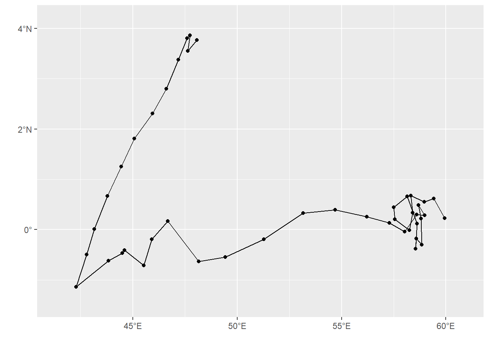
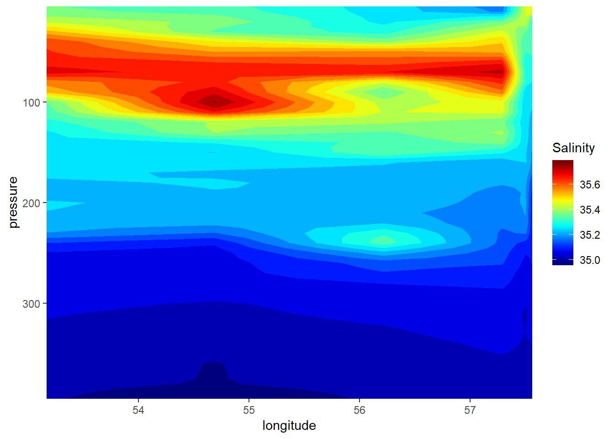

<!DOCTYPE html>
<html xmlns="http://www.w3.org/1999/xhtml" lang="" xml:lang="">
<head>

  <meta charset="utf-8" />
  <meta http-equiv="X-UA-Compatible" content="IE=edge" />
  <title>Chapter 10 Working with Dates and Time | A glimpse of GIS and Remote Sensing with R</title>
  <meta name="description" content="Introdution to geographical information system and remote sensing using an open source and powerful statical tool, R" />
  <meta name="generator" content="bookdown 0.10 and GitBook 2.6.7" />

  <meta property="og:title" content="Chapter 10 Working with Dates and Time | A glimpse of GIS and Remote Sensing with R" />
  <meta property="og:type" content="book" />
  
  
  <meta property="og:description" content="Introdution to geographical information system and remote sensing using an open source and powerful statical tool, R" />
  

  <meta name="twitter:card" content="summary" />
  <meta name="twitter:title" content="Chapter 10 Working with Dates and Time | A glimpse of GIS and Remote Sensing with R" />
  
  <meta name="twitter:description" content="Introdution to geographical information system and remote sensing using an open source and powerful statical tool, R" />
  

<meta name="author" content="Masumbuko Semba" />


<meta name="date" content="2019-06-10" />

  <meta name="viewport" content="width=device-width, initial-scale=1" />
  <meta name="apple-mobile-web-app-capable" content="yes" />
  <meta name="apple-mobile-web-app-status-bar-style" content="black" />
  
  
<link rel="prev" href="dplyr.html">
<link rel="next" href="control-flow.html">
<script src="libs/jquery-2.2.3/jquery.min.js"></script>
<link href="libs/gitbook-2.6.7/css/style.css" rel="stylesheet" />
<link href="libs/gitbook-2.6.7/css/plugin-table.css" rel="stylesheet" />
<link href="libs/gitbook-2.6.7/css/plugin-bookdown.css" rel="stylesheet" />
<link href="libs/gitbook-2.6.7/css/plugin-highlight.css" rel="stylesheet" />
<link href="libs/gitbook-2.6.7/css/plugin-search.css" rel="stylesheet" />
<link href="libs/gitbook-2.6.7/css/plugin-fontsettings.css" rel="stylesheet" />


<script src="libs/kePrint-0.0.1/kePrint.js"></script>
<script src="libs/htmlwidgets-1.3/htmlwidgets.js"></script>
<link href="libs/datatables-css-0.0.0/datatables-crosstalk.css" rel="stylesheet" />
<script src="libs/datatables-binding-0.6/datatables.js"></script>
<link href="libs/dt-core-1.10.16/css/jquery.dataTables.min.css" rel="stylesheet" />
<link href="libs/dt-core-1.10.16/css/jquery.dataTables.extra.css" rel="stylesheet" />
<script src="libs/dt-core-1.10.16/js/jquery.dataTables.min.js"></script>
<link href="libs/crosstalk-1.0.0/css/crosstalk.css" rel="stylesheet" />
<script src="libs/crosstalk-1.0.0/js/crosstalk.min.js"></script>
<link href="libs/dygraphs-1.1.1/dygraph.css" rel="stylesheet" />
<script src="libs/dygraphs-1.1.1/dygraph-combined.js"></script>
<script src="libs/dygraphs-1.1.1/shapes.js"></script>
<script src="libs/moment-2.8.4/moment.js"></script>
<script src="libs/moment-timezone-0.2.5/moment-timezone-with-data.js"></script>
<script src="libs/moment-fquarter-1.0.0/moment-fquarter.min.js"></script>
<script src="libs/dygraphs-binding-1.1.1.6/dygraphs.js"></script>
<script src="libs/Dygraph.Plugins.Unzoom-1.0/unzoom.js"></script>


<style type="text/css">
a.sourceLine { display: inline-block; line-height: 1.25; }
a.sourceLine { pointer-events: none; color: inherit; text-decoration: inherit; }
a.sourceLine:empty { height: 1.2em; }
.sourceCode { overflow: visible; }
code.sourceCode { white-space: pre; position: relative; }
div.sourceCode { margin: 1em 0; }
pre.sourceCode { margin: 0; }
@media screen {
div.sourceCode { overflow: auto; }
}
@media print {
code.sourceCode { white-space: pre-wrap; }
a.sourceLine { text-indent: -1em; padding-left: 1em; }
}
pre.numberSource a.sourceLine
  { position: relative; left: -4em; }
pre.numberSource a.sourceLine::before
  { content: attr(title);
    position: relative; left: -1em; text-align: right; vertical-align: baseline;
    border: none; pointer-events: all; display: inline-block;
    -webkit-touch-callout: none; -webkit-user-select: none;
    -khtml-user-select: none; -moz-user-select: none;
    -ms-user-select: none; user-select: none;
    padding: 0 4px; width: 4em;
    color: #aaaaaa;
  }
pre.numberSource { margin-left: 3em; border-left: 1px solid #aaaaaa;  padding-left: 4px; }
div.sourceCode
  {  }
@media screen {
a.sourceLine::before { text-decoration: underline; }
}
code span.al { color: #ff0000; font-weight: bold; } /* Alert */
code span.an { color: #60a0b0; font-weight: bold; font-style: italic; } /* Annotation */
code span.at { color: #7d9029; } /* Attribute */
code span.bn { color: #40a070; } /* BaseN */
code span.bu { } /* BuiltIn */
code span.cf { color: #007020; font-weight: bold; } /* ControlFlow */
code span.ch { color: #4070a0; } /* Char */
code span.cn { color: #880000; } /* Constant */
code span.co { color: #60a0b0; font-style: italic; } /* Comment */
code span.cv { color: #60a0b0; font-weight: bold; font-style: italic; } /* CommentVar */
code span.do { color: #ba2121; font-style: italic; } /* Documentation */
code span.dt { color: #902000; } /* DataType */
code span.dv { color: #40a070; } /* DecVal */
code span.er { color: #ff0000; font-weight: bold; } /* Error */
code span.ex { } /* Extension */
code span.fl { color: #40a070; } /* Float */
code span.fu { color: #06287e; } /* Function */
code span.im { } /* Import */
code span.in { color: #60a0b0; font-weight: bold; font-style: italic; } /* Information */
code span.kw { color: #007020; font-weight: bold; } /* Keyword */
code span.op { color: #666666; } /* Operator */
code span.ot { color: #007020; } /* Other */
code span.pp { color: #bc7a00; } /* Preprocessor */
code span.sc { color: #4070a0; } /* SpecialChar */
code span.ss { color: #bb6688; } /* SpecialString */
code span.st { color: #4070a0; } /* String */
code span.va { color: #19177c; } /* Variable */
code span.vs { color: #4070a0; } /* VerbatimString */
code span.wa { color: #60a0b0; font-weight: bold; font-style: italic; } /* Warning */
</style>

<link rel="stylesheet" href="style.css" type="text/css" />
</head>

<body>


  <div class="book without-animation with-summary font-size-2 font-family-1" data-basepath=".">

    <div class="book-summary">
      <nav role="navigation">

<ul class="summary">
<li><a href="./">A glimpse of GIS and Remote Sensing with R</a></li>

<li class="divider"></li>
<li class="chapter" data-level="" data-path="index.html"><a href="index.html"><i class="fa fa-check"></i>Prerequisites</a></li>
<li class="chapter" data-level="" data-path="sources.html"><a href="sources.html"><i class="fa fa-check"></i>Sources</a></li>
<li class="chapter" data-level="" data-path="note-to-the-reader.html"><a href="note-to-the-reader.html"><i class="fa fa-check"></i>Note to the reader</a></li>
<li class="chapter" data-level="" data-path="what-is-r.html"><a href="what-is-r.html"><i class="fa fa-check"></i>What is R?</a></li>
<li class="chapter" data-level="" data-path="who-is-this-book-for.html"><a href="who-is-this-book-for.html"><i class="fa fa-check"></i>Who is this book for?</a></li>
<li class="chapter" data-level="1" data-path="intro.html"><a href="intro.html"><i class="fa fa-check"></i><b>1</b> Introduction</a><ul>
<li class="chapter" data-level="1.1" data-path="intro.html"><a href="intro.html#why-learn-computer-programming"><i class="fa fa-check"></i><b>1.1</b> Why learn computer Programming?</a></li>
<li class="chapter" data-level="1.2" data-path="intro.html"><a href="intro.html#learning-to-program"><i class="fa fa-check"></i><b>1.2</b> Learning to program</a></li>
<li class="chapter" data-level="1.3" data-path="intro.html"><a href="intro.html#programming-in-r"><i class="fa fa-check"></i><b>1.3</b> Programming in R</a><ul>
<li class="chapter" data-level="1.3.1" data-path="intro.html"><a href="intro.html#what-is-r-1"><i class="fa fa-check"></i><b>1.3.1</b> What is R?</a></li>
<li class="chapter" data-level="1.3.2" data-path="intro.html"><a href="intro.html#installing-r"><i class="fa fa-check"></i><b>1.3.2</b> Installing R</a></li>
<li class="chapter" data-level="1.3.3" data-path="intro.html"><a href="intro.html#what-is-rstudio"><i class="fa fa-check"></i><b>1.3.3</b> What is RStudio?</a></li>
<li class="chapter" data-level="1.3.4" data-path="intro.html"><a href="intro.html#basic-features-of-rstudio"><i class="fa fa-check"></i><b>1.3.4</b> Basic Features of RStudio</a></li>
<li class="chapter" data-level="1.3.5" data-path="intro.html"><a href="intro.html#rstudio-editor"><i class="fa fa-check"></i><b>1.3.5</b> Rstudio editor</a></li>
<li class="chapter" data-level="1.3.6" data-path="intro.html"><a href="intro.html#rmarkdown"><i class="fa fa-check"></i><b>1.3.6</b> Rmarkdown</a></li>
<li class="chapter" data-level="1.3.7" data-path="intro.html"><a href="intro.html#use-descriptive-names"><i class="fa fa-check"></i><b>1.3.7</b> Use descriptive names</a></li>
<li class="chapter" data-level="1.3.8" data-path="intro.html"><a href="intro.html#use-comments"><i class="fa fa-check"></i><b>1.3.8</b> Use comments</a></li>
<li class="chapter" data-level="1.3.9" data-path="intro.html"><a href="intro.html#getting-help-in-r"><i class="fa fa-check"></i><b>1.3.9</b> Getting Help in R</a></li>
</ul></li>
</ul></li>
<li class="chapter" data-level="2" data-path="get-started.html"><a href="get-started.html"><i class="fa fa-check"></i><b>2</b> Getting started</a><ul>
<li class="chapter" data-level="2.1" data-path="get-started.html"><a href="get-started.html#maths-in-r"><i class="fa fa-check"></i><b>2.1</b> Maths in R</a><ul>
<li class="chapter" data-level="2.1.1" data-path="get-started.html"><a href="get-started.html#r-operators"><i class="fa fa-check"></i><b>2.1.1</b> R operators</a></li>
<li class="chapter" data-level="2.1.2" data-path="get-started.html"><a href="get-started.html#precedence"><i class="fa fa-check"></i><b>2.1.2</b> Precedence</a></li>
</ul></li>
<li class="chapter" data-level="2.2" data-path="get-started.html"><a href="get-started.html#assignment-operator"><i class="fa fa-check"></i><b>2.2</b> Assignment operator</a><ul>
<li class="chapter" data-level="2.2.1" data-path="get-started.html"><a href="get-started.html#variables"><i class="fa fa-check"></i><b>2.2.1</b> Variables</a></li>
<li class="chapter" data-level="2.2.2" data-path="get-started.html"><a href="get-started.html#naming-conventions"><i class="fa fa-check"></i><b>2.2.2</b> Naming conventions</a></li>
<li class="chapter" data-level="2.2.3" data-path="get-started.html"><a href="get-started.html#functions"><i class="fa fa-check"></i><b>2.2.3</b> Functions</a></li>
<li class="chapter" data-level="2.2.4" data-path="get-started.html"><a href="get-started.html#essential-functions"><i class="fa fa-check"></i><b>2.2.4</b> Essential functions</a></li>
</ul></li>
<li class="chapter" data-level="2.3" data-path="get-started.html"><a href="get-started.html#wdirectory"><i class="fa fa-check"></i><b>2.3</b> Setting Working Directory</a></li>
<li class="chapter" data-level="2.4" data-path="get-started.html"><a href="get-started.html#packages-or-libraries"><i class="fa fa-check"></i><b>2.4</b> Packages or Libraries</a><ul>
<li class="chapter" data-level="2.4.1" data-path="get-started.html"><a href="get-started.html#installing-packages"><i class="fa fa-check"></i><b>2.4.1</b> Installing packages</a></li>
<li class="chapter" data-level="2.4.2" data-path="get-started.html"><a href="get-started.html#loading-packages"><i class="fa fa-check"></i><b>2.4.2</b> Loading packages</a></li>
</ul></li>
<li class="chapter" data-level="2.5" data-path="get-started.html"><a href="get-started.html#understanding-data-in-r"><i class="fa fa-check"></i><b>2.5</b> Understanding Data in R</a><ul>
<li class="chapter" data-level="2.5.1" data-path="get-started.html"><a href="get-started.html#data-types"><i class="fa fa-check"></i><b>2.5.1</b> Data Types</a></li>
<li class="chapter" data-level="2.5.2" data-path="get-started.html"><a href="get-started.html#vectors"><i class="fa fa-check"></i><b>2.5.2</b> Vectors</a></li>
<li class="chapter" data-level="2.5.3" data-path="get-started.html"><a href="get-started.html#indexing-the-element"><i class="fa fa-check"></i><b>2.5.3</b> Indexing the element</a></li>
<li class="chapter" data-level="2.5.4" data-path="get-started.html"><a href="get-started.html#adding-and-replacing-an-element-in-a-vector"><i class="fa fa-check"></i><b>2.5.4</b> Adding and Replacing an element in a vector</a></li>
<li class="chapter" data-level="2.5.5" data-path="get-started.html"><a href="get-started.html#number-of-elements-in-a-vector"><i class="fa fa-check"></i><b>2.5.5</b> Number of elements in a vector</a></li>
</ul></li>
<li class="chapter" data-level="2.6" data-path="get-started.html"><a href="get-started.html#data-frame"><i class="fa fa-check"></i><b>2.6</b> Data Frame</a></li>
<li class="chapter" data-level="2.7" data-path="get-started.html"><a href="get-started.html#tibbles"><i class="fa fa-check"></i><b>2.7</b> tibbles</a><ul>
<li class="chapter" data-level="2.7.1" data-path="get-started.html"><a href="get-started.html#column-names"><i class="fa fa-check"></i><b>2.7.1</b> Column Names</a></li>
<li class="chapter" data-level="2.7.2" data-path="get-started.html"><a href="get-started.html#add-rows-and-columns"><i class="fa fa-check"></i><b>2.7.2</b> Add rows and columns</a></li>
</ul></li>
<li class="chapter" data-level="2.8" data-path="get-started.html"><a href="get-started.html#exercise"><i class="fa fa-check"></i><b>2.8</b> Exercise</a></li>
<li class="chapter" data-level="2.9" data-path="get-started.html"><a href="get-started.html#exercise-1"><i class="fa fa-check"></i><b>2.9</b> Exercise</a></li>
</ul></li>
<li class="chapter" data-level="3" data-path="get-familiar-with-r-markdown.html"><a href="get-familiar-with-r-markdown.html"><i class="fa fa-check"></i><b>3</b> Get familiar with R Markdown</a><ul>
<li class="chapter" data-level="3.1" data-path="get-familiar-with-r-markdown.html"><a href="get-familiar-with-r-markdown.html#r-markdown"><i class="fa fa-check"></i><b>3.1</b> R Markdown</a></li>
<li class="chapter" data-level="3.2" data-path="get-familiar-with-r-markdown.html"><a href="get-familiar-with-r-markdown.html#text-formating"><i class="fa fa-check"></i><b>3.2</b> Text Formating</a></li>
<li class="chapter" data-level="3.3" data-path="get-familiar-with-r-markdown.html"><a href="get-familiar-with-r-markdown.html#hyperlinks"><i class="fa fa-check"></i><b>3.3</b> Hyperlinks</a></li>
<li class="chapter" data-level="3.4" data-path="get-familiar-with-r-markdown.html"><a href="get-familiar-with-r-markdown.html#images"><i class="fa fa-check"></i><b>3.4</b> Images</a></li>
<li class="chapter" data-level="3.5" data-path="get-familiar-with-r-markdown.html"><a href="get-familiar-with-r-markdown.html#tables"><i class="fa fa-check"></i><b>3.5</b> Tables</a></li>
<li class="chapter" data-level="3.6" data-path="get-familiar-with-r-markdown.html"><a href="get-familiar-with-r-markdown.html#cross-referencing"><i class="fa fa-check"></i><b>3.6</b> Cross-referencing</a></li>
<li class="chapter" data-level="3.7" data-path="get-familiar-with-r-markdown.html"><a href="get-familiar-with-r-markdown.html#bibliographies"><i class="fa fa-check"></i><b>3.7</b> Bibliographies</a></li>
<li class="chapter" data-level="3.8" data-path="get-familiar-with-r-markdown.html"><a href="get-familiar-with-r-markdown.html#create-.rmd-file"><i class="fa fa-check"></i><b>3.8</b> Create .Rmd FIle</a></li>
<li class="chapter" data-level="3.9" data-path="get-familiar-with-r-markdown.html"><a href="get-familiar-with-r-markdown.html#rendering-markdown"><i class="fa fa-check"></i><b>3.9</b> Rendering Markdown</a></li>
<li class="chapter" data-level="3.10" data-path="get-familiar-with-r-markdown.html"><a href="get-familiar-with-r-markdown.html#structure-of-an-rmarkdown-file"><i class="fa fa-check"></i><b>3.10</b> Structure of an Rmarkdown FIle</a></li>
<li class="chapter" data-level="3.11" data-path="get-familiar-with-r-markdown.html"><a href="get-familiar-with-r-markdown.html#inserting-code-chunk"><i class="fa fa-check"></i><b>3.11</b> Inserting code chunk</a></li>
<li class="chapter" data-level="3.12" data-path="get-familiar-with-r-markdown.html"><a href="get-familiar-with-r-markdown.html#chunk-name"><i class="fa fa-check"></i><b>3.12</b> Chunk name</a></li>
<li class="chapter" data-level="3.13" data-path="get-familiar-with-r-markdown.html"><a href="get-familiar-with-r-markdown.html#chunk-options"><i class="fa fa-check"></i><b>3.13</b> Chunk options</a></li>
<li class="chapter" data-level="3.14" data-path="get-familiar-with-r-markdown.html"><a href="get-familiar-with-r-markdown.html#inline-code"><i class="fa fa-check"></i><b>3.14</b> Inline code</a></li>
</ul></li>
<li class="chapter" data-level="4" data-path="dataTypes.html"><a href="dataTypes.html"><i class="fa fa-check"></i><b>4</b> Understanding Data in R</a><ul>
<li class="chapter" data-level="4.0.1" data-path="dataTypes.html"><a href="dataTypes.html#data-types-1"><i class="fa fa-check"></i><b>4.0.1</b> Data Types</a></li>
<li class="chapter" data-level="4.0.2" data-path="dataTypes.html"><a href="dataTypes.html#vectors-1"><i class="fa fa-check"></i><b>4.0.2</b> Vectors</a></li>
<li class="chapter" data-level="4.0.3" data-path="dataTypes.html"><a href="dataTypes.html#indexing-the-element-1"><i class="fa fa-check"></i><b>4.0.3</b> Indexing the element</a></li>
<li class="chapter" data-level="4.0.4" data-path="dataTypes.html"><a href="dataTypes.html#adding-and-replacing-an-element-in-a-vector-1"><i class="fa fa-check"></i><b>4.0.4</b> Adding and Replacing an element in a vector</a></li>
<li class="chapter" data-level="4.0.5" data-path="dataTypes.html"><a href="dataTypes.html#number-of-elements-in-a-vector-1"><i class="fa fa-check"></i><b>4.0.5</b> Number of elements in a vector</a></li>
<li class="chapter" data-level="4.0.6" data-path="dataTypes.html"><a href="dataTypes.html#generating-sequence-of-vectors-numbers"><i class="fa fa-check"></i><b>4.0.6</b> Generating sequence of vectors Numbers</a></li>
<li class="chapter" data-level="4.0.7" data-path="dataTypes.html"><a href="dataTypes.html#generating-vector-of-normal-distribution"><i class="fa fa-check"></i><b>4.0.7</b> Generating vector of normal distribution</a></li>
<li class="chapter" data-level="4.0.8" data-path="dataTypes.html"><a href="dataTypes.html#rounding-off-numbers"><i class="fa fa-check"></i><b>4.0.8</b> Rounding off numbers</a></li>
<li class="chapter" data-level="4.1" data-path="dataTypes.html"><a href="dataTypes.html#data-frame-1"><i class="fa fa-check"></i><b>4.1</b> Data Frame</a><ul>
<li class="chapter" data-level="4.1.1" data-path="dataTypes.html"><a href="dataTypes.html#creating-data-frames"><i class="fa fa-check"></i><b>4.1.1</b> Creating data frames</a></li>
</ul></li>
<li class="chapter" data-level="4.2" data-path="dataTypes.html"><a href="dataTypes.html#matrix"><i class="fa fa-check"></i><b>4.2</b> Matrix</a><ul>
<li class="chapter" data-level="4.2.1" data-path="dataTypes.html"><a href="dataTypes.html#creating-matrices"><i class="fa fa-check"></i><b>4.2.1</b> Creating Matrices</a></li>
<li class="chapter" data-level="4.2.2" data-path="dataTypes.html"><a href="dataTypes.html#adding-attributes-to-matrices"><i class="fa fa-check"></i><b>4.2.2</b> Adding attributes to Matrices</a></li>
</ul></li>
<li class="chapter" data-level="4.3" data-path="dataTypes.html"><a href="dataTypes.html#arrays"><i class="fa fa-check"></i><b>4.3</b> Arrays</a></li>
<li class="chapter" data-level="4.4" data-path="dataTypes.html"><a href="dataTypes.html#dealing-with-misiing-values"><i class="fa fa-check"></i><b>4.4</b> Dealing with Misiing Values</a></li>
</ul></li>
<li class="chapter" data-level="5" data-path="vector.html"><a href="vector.html"><i class="fa fa-check"></i><b>5</b> Vector Data</a><ul>
<li class="chapter" data-level="5.1" data-path="vector.html"><a href="vector.html#introduction"><i class="fa fa-check"></i><b>5.1</b> Introduction</a></li>
<li class="chapter" data-level="5.2" data-path="vector.html"><a href="vector.html#numeric-vector"><i class="fa fa-check"></i><b>5.2</b> Numeric Vector</a></li>
<li class="chapter" data-level="5.3" data-path="vector.html"><a href="vector.html#integer-vector"><i class="fa fa-check"></i><b>5.3</b> Integer vector</a></li>
<li class="chapter" data-level="5.4" data-path="vector.html"><a href="vector.html#character-vector"><i class="fa fa-check"></i><b>5.4</b> Character vector</a></li>
<li class="chapter" data-level="5.5" data-path="vector.html"><a href="vector.html#logical-vector"><i class="fa fa-check"></i><b>5.5</b> Logical Vector</a></li>
<li class="chapter" data-level="5.6" data-path="vector.html"><a href="vector.html#vector-data"><i class="fa fa-check"></i><b>5.6</b> Vector Data</a><ul>
<li class="chapter" data-level="5.6.1" data-path="vector.html"><a href="vector.html#simple-features"><i class="fa fa-check"></i><b>5.6.1</b> Simple features</a></li>
</ul></li>
<li class="chapter" data-level="5.7" data-path="vector.html"><a href="vector.html#reading-vector-data"><i class="fa fa-check"></i><b>5.7</b> Reading vector data</a><ul>
<li class="chapter" data-level="5.7.1" data-path="vector.html"><a href="vector.html#reading-shapefiles"><i class="fa fa-check"></i><b>5.7.1</b> Reading shapefiles</a></li>
<li class="chapter" data-level="5.7.2" data-path="vector.html"><a href="vector.html#reading-gpx-file"><i class="fa fa-check"></i><b>5.7.2</b> Reading GPX file</a></li>
</ul></li>
<li class="chapter" data-level="5.8" data-path="vector.html"><a href="vector.html#make-shapefiles-from-tabular-data"><i class="fa fa-check"></i><b>5.8</b> Make shapefiles from Tabular data</a></li>
<li class="chapter" data-level="5.9" data-path="vector.html"><a href="vector.html#export-simple-feature-as-shapefile"><i class="fa fa-check"></i><b>5.9</b> Export simple feature as shapefile</a></li>
</ul></li>
<li class="chapter" data-level="6" data-path="introduction-to-tidyverse.html"><a href="introduction-to-tidyverse.html"><i class="fa fa-check"></i><b>6</b> Introduction to tidyverse</a><ul>
<li class="chapter" data-level="6.1" data-path="introduction-to-tidyverse.html"><a href="introduction-to-tidyverse.html#readr"><i class="fa fa-check"></i><b>6.1</b> readr</a></li>
<li class="chapter" data-level="6.2" data-path="introduction-to-tidyverse.html"><a href="introduction-to-tidyverse.html#dplyr"><i class="fa fa-check"></i><b>6.2</b> dplyr</a></li>
<li class="chapter" data-level="6.3" data-path="introduction-to-tidyverse.html"><a href="introduction-to-tidyverse.html#tidyr"><i class="fa fa-check"></i><b>6.3</b> tidyr</a></li>
<li class="chapter" data-level="6.4" data-path="introduction-to-tidyverse.html"><a href="introduction-to-tidyverse.html#ggplot2"><i class="fa fa-check"></i><b>6.4</b> ggplot2</a></li>
</ul></li>
<li class="chapter" data-level="7" data-path="introduction-to-tidyverse.html"><a href="introduction-to-tidyverse.html#readr"><i class="fa fa-check"></i><b>7</b> Importing data with <strong>readr</strong></a><ul>
<li class="chapter" data-level="7.1" data-path="readr.html"><a href="readr.html"><i class="fa fa-check"></i><b>7.1</b> <em>Comma-Separated (.csv)</em></a></li>
<li class="chapter" data-level="7.2" data-path="readr.html"><a href="readr.html#microsoft-excel.xlsx"><i class="fa fa-check"></i><b>7.2</b> Microsoft Excel(.xlsx)</a></li>
<li class="chapter" data-level="7.3" data-path="readr.html"><a href="readr.html#writing-t-a-file"><i class="fa fa-check"></i><b>7.3</b> Writing t a File</a></li>
<li class="chapter" data-level="7.4" data-path="readr.html"><a href="readr.html#basic-data-manipulation"><i class="fa fa-check"></i><b>7.4</b> Basic Data Manipulation</a><ul>
<li class="chapter" data-level="7.4.1" data-path="readr.html"><a href="readr.html#explore-the-data-frame"><i class="fa fa-check"></i><b>7.4.1</b> Explore the Data Frame</a></li>
<li class="chapter" data-level="7.4.2" data-path="readr.html"><a href="readr.html#simmple-summary-statistics"><i class="fa fa-check"></i><b>7.4.2</b> simmple summary statistics</a></li>
</ul></li>
</ul></li>
<li class="chapter" data-level="8" data-path="tidy.html"><a href="tidy.html"><i class="fa fa-check"></i><b>8</b> Reshaping data with <strong>tidyr</strong></a><ul>
<li class="chapter" data-level="8.1" data-path="tidy.html"><a href="tidy.html#gatherfrom-wide-to-long-format."><i class="fa fa-check"></i><b>8.1</b> Gather—from wide to long format.</a></li>
<li class="chapter" data-level="8.2" data-path="tidy.html"><a href="tidy.html#spread-from-long-to-wide-format"><i class="fa fa-check"></i><b>8.2</b> spread() —from long to wide format</a></li>
<li class="chapter" data-level="8.3" data-path="tidy.html"><a href="tidy.html#separate"><i class="fa fa-check"></i><b>8.3</b> separate()</a></li>
</ul></li>
<li class="chapter" data-level="9" data-path="introduction-to-tidyverse.html"><a href="introduction-to-tidyverse.html#dplyr"><i class="fa fa-check"></i><b>9</b> Manipulating Data with <strong>dplyr</strong></a><ul>
<li class="chapter" data-level="9.1" data-path="dplyr.html"><a href="dplyr.html"><i class="fa fa-check"></i><b>9.1</b> Why use dplyr?</a></li>
<li class="chapter" data-level="9.2" data-path="dplyr.html"><a href="dplyr.html#core-dplyr-functions"><i class="fa fa-check"></i><b>9.2</b> Core dplyr Functions</a></li>
<li class="chapter" data-level="9.3" data-path="dplyr.html"><a href="dplyr.html#data"><i class="fa fa-check"></i><b>9.3</b> Data</a></li>
<li class="chapter" data-level="9.4" data-path="dplyr.html"><a href="dplyr.html#choosing-rows-filtering-observations"><i class="fa fa-check"></i><b>9.4</b> Choosing rows: Filtering observations</a></li>
<li class="chapter" data-level="9.5" data-path="dplyr.html"><a href="dplyr.html#select"><i class="fa fa-check"></i><b>9.5</b> select</a><ul>
<li class="chapter" data-level="9.5.1" data-path="dplyr.html"><a href="dplyr.html#adding-new-variables-mutate-transmute-add_rownames"><i class="fa fa-check"></i><b>9.5.1</b> Adding new variables: mutate, transmute, add_rownames</a></li>
<li class="chapter" data-level="9.5.2" data-path="dplyr.html"><a href="dplyr.html#arranging-rows"><i class="fa fa-check"></i><b>9.5.2</b> Arranging rows</a></li>
</ul></li>
<li class="chapter" data-level="9.6" data-path="dplyr.html"><a href="dplyr.html#summarizing-and-grouping"><i class="fa fa-check"></i><b>9.6</b> Summarizing and Grouping</a></li>
</ul></li>
<li class="chapter" data-level="10" data-path="working-with-dates-and-time.html"><a href="working-with-dates-and-time.html"><i class="fa fa-check"></i><b>10</b> Working with Dates and Time</a><ul>
<li class="chapter" data-level="10.1" data-path="working-with-dates-and-time.html"><a href="working-with-dates-and-time.html#getting-the-date-and-time-with-localtime"><i class="fa fa-check"></i><b>10.1</b> Getting the Date and Time with localtime</a></li>
<li class="chapter" data-level="10.2" data-path="working-with-dates-and-time.html"><a href="working-with-dates-and-time.html#converting-strings-to-dates"><i class="fa fa-check"></i><b>10.2</b> Converting strings to Dates</a><ul>
<li class="chapter" data-level="10.2.1" data-path="working-with-dates-and-time.html"><a href="working-with-dates-and-time.html#convert-strings-to-dates"><i class="fa fa-check"></i><b>10.2.1</b> convert strings to dates</a></li>
</ul></li>
<li class="chapter" data-level="10.3" data-path="working-with-dates-and-time.html"><a href="working-with-dates-and-time.html#converting-date-with-lubridate-package"><i class="fa fa-check"></i><b>10.3</b> Converting date with <strong>lubridate</strong> package</a></li>
<li class="chapter" data-level="10.4" data-path="working-with-dates-and-time.html"><a href="working-with-dates-and-time.html#create-dates-by-merging-data"><i class="fa fa-check"></i><b>10.4</b> Create Dates by Merging Data</a></li>
<li class="chapter" data-level="10.5" data-path="working-with-dates-and-time.html"><a href="working-with-dates-and-time.html#isodate-converts-to-a-posixct-object"><i class="fa fa-check"></i><b>10.5</b> ISOdate converts to a POSIXct object</a></li>
<li class="chapter" data-level="10.6" data-path="working-with-dates-and-time.html"><a href="working-with-dates-and-time.html#extract-and-manipulate-parts-of-dates"><i class="fa fa-check"></i><b>10.6</b> Extract and Manipulate Parts of Dates</a></li>
<li class="chapter" data-level="10.7" data-path="working-with-dates-and-time.html"><a href="working-with-dates-and-time.html#creating-date-sequences"><i class="fa fa-check"></i><b>10.7</b> Creating Date Sequences</a></li>
<li class="chapter" data-level="10.8" data-path="working-with-dates-and-time.html"><a href="working-with-dates-and-time.html#calculations-with-dates"><i class="fa fa-check"></i><b>10.8</b> Calculations with Dates</a></li>
<li class="chapter" data-level="10.9" data-path="working-with-dates-and-time.html"><a href="working-with-dates-and-time.html#time-difference-of-15-days"><i class="fa fa-check"></i><b>10.9</b> Time difference of 15 days</a></li>
<li class="chapter" data-level="10.10" data-path="working-with-dates-and-time.html"><a href="working-with-dates-and-time.html#example-with-time-zones"><i class="fa fa-check"></i><b>10.10</b> example with time zones</a></li>
<li class="chapter" data-level="10.11" data-path="working-with-dates-and-time.html"><a href="working-with-dates-and-time.html#time-interval"><i class="fa fa-check"></i><b>10.11</b> Time Interval</a></li>
<li class="chapter" data-level="10.12" data-path="working-with-dates-and-time.html"><a href="working-with-dates-and-time.html#ctd-list"><i class="fa fa-check"></i><b>10.12</b> ctd list</a></li>
<li class="chapter" data-level="10.13" data-path="working-with-dates-and-time.html"><a href="working-with-dates-and-time.html#arithmetic-with-date-times"><i class="fa fa-check"></i><b>10.13</b> Arithmetic with date times</a></li>
<li class="chapter" data-level="10.14" data-path="working-with-dates-and-time.html"><a href="working-with-dates-and-time.html#dealing-with-time-zones"><i class="fa fa-check"></i><b>10.14</b> Dealing with Time Zones</a></li>
<li class="chapter" data-level="10.15" data-path="working-with-dates-and-time.html"><a href="working-with-dates-and-time.html#case-study-working-with-date-and-time-of-argo-float-observations"><i class="fa fa-check"></i><b>10.15</b> Case study: Working with Date and Time of Argo float observations</a></li>
<li class="chapter" data-level="10.16" data-path="working-with-dates-and-time.html"><a href="working-with-dates-and-time.html#data-1"><i class="fa fa-check"></i><b>10.16</b> Data</a></li>
<li class="chapter" data-level="10.17" data-path="working-with-dates-and-time.html"><a href="working-with-dates-and-time.html#data-processing"><i class="fa fa-check"></i><b>10.17</b> Data processing</a></li>
</ul></li>
<li class="chapter" data-level="11" data-path="control-flow.html"><a href="control-flow.html"><i class="fa fa-check"></i><b>11</b> Control flow</a><ul>
<li class="chapter" data-level="11.1" data-path="control-flow.html"><a href="control-flow.html#for-loop"><i class="fa fa-check"></i><b>11.1</b> for loop</a><ul>
<li class="chapter" data-level="11.1.1" data-path="control-flow.html"><a href="control-flow.html#for-loop-on-array"><i class="fa fa-check"></i><b>11.1.1</b> For loop on array</a></li>
</ul></li>
<li class="chapter" data-level="11.2" data-path="control-flow.html"><a href="control-flow.html#if-and-else-statement"><i class="fa fa-check"></i><b>11.2</b> if and else statement</a></li>
<li class="chapter" data-level="11.3" data-path="control-flow.html"><a href="control-flow.html#functions-1"><i class="fa fa-check"></i><b>11.3</b> Functions</a><ul>
<li class="chapter" data-level="11.3.1" data-path="control-flow.html"><a href="control-flow.html#core-functions"><i class="fa fa-check"></i><b>11.3.1</b> core functions</a></li>
<li class="chapter" data-level="11.3.2" data-path="control-flow.html"><a href="control-flow.html#user-defined-functions"><i class="fa fa-check"></i><b>11.3.2</b> user defined functions</a></li>
</ul></li>
<li class="chapter" data-level="11.4" data-path="control-flow.html"><a href="control-flow.html#packages"><i class="fa fa-check"></i><b>11.4</b> packages</a></li>
</ul></li>
<li class="chapter" data-level="12" data-path="functions-and-packages.html"><a href="functions-and-packages.html"><i class="fa fa-check"></i><b>12</b> Functions and packages</a><ul>
<li class="chapter" data-level="12.0.1" data-path="functions-and-packages.html"><a href="functions-and-packages.html#core-functions-1"><i class="fa fa-check"></i><b>12.0.1</b> core functions</a></li>
<li class="chapter" data-level="12.0.2" data-path="functions-and-packages.html"><a href="functions-and-packages.html#user-defined-functions-1"><i class="fa fa-check"></i><b>12.0.2</b> user defined functions</a></li>
<li class="chapter" data-level="12.1" data-path="functions-and-packages.html"><a href="functions-and-packages.html#packages-1"><i class="fa fa-check"></i><b>12.1</b> packages</a></li>
<li class="chapter" data-level="12.2" data-path="functions-and-packages.html"><a href="functions-and-packages.html#function-pipelines"><i class="fa fa-check"></i><b>12.2</b> function pipelines</a></li>
</ul></li>
<li class="chapter" data-level="13" data-path="raster.html"><a href="raster.html"><i class="fa fa-check"></i><b>13</b> Raster Data</a><ul>
<li class="chapter" data-level="13.1" data-path="raster.html"><a href="raster.html#introduction-to-raster-data"><i class="fa fa-check"></i><b>13.1</b> Introduction to Raster data</a><ul>
<li class="chapter" data-level="13.1.1" data-path="raster.html"><a href="raster.html#geotiff"><i class="fa fa-check"></i><b>13.1.1</b> GeoTiff</a></li>
<li class="chapter" data-level="13.1.2" data-path="raster.html"><a href="raster.html#explore-the-raster-attribute"><i class="fa fa-check"></i><b>13.1.2</b> Explore the raster attribute</a></li>
<li class="chapter" data-level="13.1.3" data-path="raster.html"><a href="raster.html#read-a-geotiff-raster-data"><i class="fa fa-check"></i><b>13.1.3</b> Read a GeoTIFF raster data</a></li>
<li class="chapter" data-level="13.1.4" data-path="raster.html"><a href="raster.html#view-raster-coordinate-reference-system"><i class="fa fa-check"></i><b>13.1.4</b> View Raster Coordinate Reference System</a></li>
<li class="chapter" data-level="13.1.5" data-path="raster.html"><a href="raster.html#dealing-with-missing-data-in-raster"><i class="fa fa-check"></i><b>13.1.5</b> Dealing with missing data in raster</a></li>
</ul></li>
<li class="chapter" data-level="13.2" data-path="raster.html"><a href="raster.html#assign-projection-and-reproject-raster-data-in-r"><i class="fa fa-check"></i><b>13.2</b> Assign projection and Reproject Raster Data in R</a></li>
<li class="chapter" data-level="13.3" data-path="raster.html"><a href="raster.html#raster-resolution"><i class="fa fa-check"></i><b>13.3</b> Raster resolution</a></li>
<li class="chapter" data-level="13.4" data-path="raster.html"><a href="raster.html#raster-calculation"><i class="fa fa-check"></i><b>13.4</b> Raster Calculation</a></li>
<li class="chapter" data-level="13.5" data-path="raster.html"><a href="raster.html#multi-bands-satellite-imagery"><i class="fa fa-check"></i><b>13.5</b> Multi-bands satellite imagery</a><ul>
<li class="chapter" data-level="13.5.1" data-path="raster.html"><a href="raster.html#rater-stacks"><i class="fa fa-check"></i><b>13.5.1</b> Rater Stacks</a></li>
</ul></li>
<li class="chapter" data-level="13.6" data-path="raster.html"><a href="raster.html#manipulate-raster"><i class="fa fa-check"></i><b>13.6</b> Manipulate raster</a></li>
<li class="chapter" data-level="13.7" data-path="raster.html"><a href="raster.html#raster-time-series-data"><i class="fa fa-check"></i><b>13.7</b> Raster time series data</a></li>
<li class="chapter" data-level="13.8" data-path="raster.html"><a href="raster.html#comparing-ndvi-from-two-different-sites"><i class="fa fa-check"></i><b>13.8</b> comparing NDVI from Two different sites</a></li>
</ul></li>
<li class="chapter" data-level="14" data-path="plotting-in-r-with-ggplot2.html"><a href="plotting-in-r-with-ggplot2.html"><i class="fa fa-check"></i><b>14</b> Plotting in R with <code>ggplot2</code></a><ul>
<li class="chapter" data-level="14.1" data-path="plotting-in-r-with-ggplot2.html"><a href="plotting-in-r-with-ggplot2.html#a-dataset"><i class="fa fa-check"></i><b>14.1</b> A dataset</a></li>
<li class="chapter" data-level="14.2" data-path="plotting-in-r-with-ggplot2.html"><a href="plotting-in-r-with-ggplot2.html#components-of-ggplot-objects-components"><i class="fa fa-check"></i><b>14.2</b> Components of ggplot objects {components}</a></li>
<li class="chapter" data-level="14.3" data-path="plotting-in-r-with-ggplot2.html"><a href="plotting-in-r-with-ggplot2.html#building-a-plot"><i class="fa fa-check"></i><b>14.3</b> Building a plot</a><ul>
<li class="chapter" data-level="14.3.1" data-path="plotting-in-r-with-ggplot2.html"><a href="plotting-in-r-with-ggplot2.html#plotting-layers"><i class="fa fa-check"></i><b>14.3.1</b> Plotting layers</a></li>
<li class="chapter" data-level="14.3.2" data-path="plotting-in-r-with-ggplot2.html"><a href="plotting-in-r-with-ggplot2.html#customize-legend"><i class="fa fa-check"></i><b>14.3.2</b> Customize legend</a></li>
<li class="chapter" data-level="14.3.3" data-path="plotting-in-r-with-ggplot2.html"><a href="plotting-in-r-with-ggplot2.html#working-with-titles-and-labels"><i class="fa fa-check"></i><b>14.3.3</b> Working with titles and labels</a></li>
</ul></li>
<li class="chapter" data-level="14.4" data-path="plotting-in-r-with-ggplot2.html"><a href="plotting-in-r-with-ggplot2.html#customize-glidline-and-axis-labels"><i class="fa fa-check"></i><b>14.4</b> Customize glidline and axis labels</a><ul>
<li class="chapter" data-level="14.4.1" data-path="plotting-in-r-with-ggplot2.html"><a href="plotting-in-r-with-ggplot2.html#remove-the-gray-box-of-points-on-legend"><i class="fa fa-check"></i><b>14.4.1</b> Remove the gray box of points on legend</a></li>
</ul></li>
<li class="chapter" data-level="14.5" data-path="plotting-in-r-with-ggplot2.html"><a href="plotting-in-r-with-ggplot2.html#modify-the-position-of-the-legend"><i class="fa fa-check"></i><b>14.5</b> Modify the position of the legend</a><ul>
<li class="chapter" data-level="14.5.1" data-path="plotting-in-r-with-ggplot2.html"><a href="plotting-in-r-with-ggplot2.html#change-the-legend-background-and-stroke-color"><i class="fa fa-check"></i><b>14.5.1</b> Change the legend background and stroke color</a></li>
<li class="chapter" data-level="14.5.2" data-path="plotting-in-r-with-ggplot2.html"><a href="plotting-in-r-with-ggplot2.html#modify-background-colors"><i class="fa fa-check"></i><b>14.5.2</b> Modify background colors</a></li>
<li class="chapter" data-level="14.5.3" data-path="plotting-in-r-with-ggplot2.html"><a href="plotting-in-r-with-ggplot2.html#change-the-gridlines"><i class="fa fa-check"></i><b>14.5.3</b> change the gridlines</a></li>
<li class="chapter" data-level="14.5.4" data-path="plotting-in-r-with-ggplot2.html"><a href="plotting-in-r-with-ggplot2.html#change-the-font-size-for-axis-labels-and-titles"><i class="fa fa-check"></i><b>14.5.4</b> Change the font size for axis, labels and titles</a></li>
<li class="chapter" data-level="14.5.5" data-path="plotting-in-r-with-ggplot2.html"><a href="plotting-in-r-with-ggplot2.html#limit-axis-to-a-range"><i class="fa fa-check"></i><b>14.5.5</b> Limit axis to a range</a></li>
<li class="chapter" data-level="14.5.6" data-path="plotting-in-r-with-ggplot2.html"><a href="plotting-in-r-with-ggplot2.html#adding-labels"><i class="fa fa-check"></i><b>14.5.6</b> Adding labels</a></li>
<li class="chapter" data-level="14.5.7" data-path="plotting-in-r-with-ggplot2.html"><a href="plotting-in-r-with-ggplot2.html#add-text-annotation"><i class="fa fa-check"></i><b>14.5.7</b> Add text annotation</a></li>
<li class="chapter" data-level="14.5.8" data-path="plotting-in-r-with-ggplot2.html"><a href="plotting-in-r-with-ggplot2.html#make-the-x-and-y-axis-the-same"><i class="fa fa-check"></i><b>14.5.8</b> Make the x and y axis the same</a></li>
<li class="chapter" data-level="14.5.9" data-path="plotting-in-r-with-ggplot2.html"><a href="plotting-in-r-with-ggplot2.html#faceting-creating-multipanel-plots"><i class="fa fa-check"></i><b>14.5.9</b> Faceting —Creating multi–panel plots</a></li>
<li class="chapter" data-level="14.5.10" data-path="plotting-in-r-with-ggplot2.html"><a href="plotting-in-r-with-ggplot2.html#allow-scales-to-roam-free-scales"><i class="fa fa-check"></i><b>14.5.10</b> Allow scales to roam free (scales)</a></li>
</ul></li>
<li class="chapter" data-level="14.6" data-path="plotting-in-r-with-ggplot2.html"><a href="plotting-in-r-with-ggplot2.html#basic-plots"><i class="fa fa-check"></i><b>14.6</b> Basic plots</a><ul>
<li class="chapter" data-level="14.6.1" data-path="plotting-in-r-with-ggplot2.html"><a href="plotting-in-r-with-ggplot2.html#scatterplot"><i class="fa fa-check"></i><b>14.6.1</b> scatterplot</a></li>
<li class="chapter" data-level="14.6.2" data-path="plotting-in-r-with-ggplot2.html"><a href="plotting-in-r-with-ggplot2.html#adding-regression-line"><i class="fa fa-check"></i><b>14.6.2</b> adding regression line</a></li>
</ul></li>
<li class="chapter" data-level="14.7" data-path="plotting-in-r-with-ggplot2.html"><a href="plotting-in-r-with-ggplot2.html#linegraph"><i class="fa fa-check"></i><b>14.7</b> Linegraph</a><ul>
<li class="chapter" data-level="14.7.1" data-path="plotting-in-r-with-ggplot2.html"><a href="plotting-in-r-with-ggplot2.html#histogram"><i class="fa fa-check"></i><b>14.7.1</b> histogram</a></li>
<li class="chapter" data-level="14.7.2" data-path="plotting-in-r-with-ggplot2.html"><a href="plotting-in-r-with-ggplot2.html#boxplot"><i class="fa fa-check"></i><b>14.7.2</b> boxplot</a></li>
<li class="chapter" data-level="14.7.3" data-path="plotting-in-r-with-ggplot2.html"><a href="plotting-in-r-with-ggplot2.html#barplot"><i class="fa fa-check"></i><b>14.7.3</b> barplot</a></li>
<li class="chapter" data-level="14.7.4" data-path="plotting-in-r-with-ggplot2.html"><a href="plotting-in-r-with-ggplot2.html#barplot-for-values"><i class="fa fa-check"></i><b>14.7.4</b> barplot for values</a></li>
</ul></li>
<li class="chapter" data-level="14.8" data-path="plotting-in-r-with-ggplot2.html"><a href="plotting-in-r-with-ggplot2.html#advanced-plots"><i class="fa fa-check"></i><b>14.8</b> Advanced plots</a><ul>
<li class="chapter" data-level="14.8.1" data-path="plotting-in-r-with-ggplot2.html"><a href="plotting-in-r-with-ggplot2.html#facets"><i class="fa fa-check"></i><b>14.8.1</b> Facets</a></li>
<li class="chapter" data-level="14.8.2" data-path="plotting-in-r-with-ggplot2.html"><a href="plotting-in-r-with-ggplot2.html#sea-surface-temperature"><i class="fa fa-check"></i><b>14.8.2</b> Sea Surface Temperature</a></li>
<li class="chapter" data-level="14.8.3" data-path="plotting-in-r-with-ggplot2.html"><a href="plotting-in-r-with-ggplot2.html#subplot"><i class="fa fa-check"></i><b>14.8.3</b> Subplot</a></li>
</ul></li>
<li class="chapter" data-level="14.9" data-path="plotting-in-r-with-ggplot2.html"><a href="plotting-in-r-with-ggplot2.html#colour"><i class="fa fa-check"></i><b>14.9</b> Colour</a></li>
<li class="chapter" data-level="14.10" data-path="plotting-in-r-with-ggplot2.html"><a href="plotting-in-r-with-ggplot2.html#size"><i class="fa fa-check"></i><b>14.10</b> size</a></li>
<li class="chapter" data-level="14.11" data-path="plotting-in-r-with-ggplot2.html"><a href="plotting-in-r-with-ggplot2.html#scaling"><i class="fa fa-check"></i><b>14.11</b> scaling</a></li>
<li class="chapter" data-level="14.12" data-path="plotting-in-r-with-ggplot2.html"><a href="plotting-in-r-with-ggplot2.html#guides"><i class="fa fa-check"></i><b>14.12</b> Guides</a></li>
<li class="chapter" data-level="14.13" data-path="plotting-in-r-with-ggplot2.html"><a href="plotting-in-r-with-ggplot2.html#add-on-packages"><i class="fa fa-check"></i><b>14.13</b> Add-on packages</a></li>
<li class="chapter" data-level="14.14" data-path="plotting-in-r-with-ggplot2.html"><a href="plotting-in-r-with-ggplot2.html#ggridges"><i class="fa fa-check"></i><b>14.14</b> ggridges</a></li>
<li class="chapter" data-level="14.15" data-path="plotting-in-r-with-ggplot2.html"><a href="plotting-in-r-with-ggplot2.html#varying-fill-colors-along-the-x-axis"><i class="fa fa-check"></i><b>14.15</b> Varying fill colors along the x axis</a></li>
<li class="chapter" data-level="14.16" data-path="plotting-in-r-with-ggplot2.html"><a href="plotting-in-r-with-ggplot2.html#metr"><i class="fa fa-check"></i><b>14.16</b> metR</a></li>
</ul></li>
<li class="chapter" data-level="15" data-path="a-grammar-for-graphics.html"><a href="a-grammar-for-graphics.html"><i class="fa fa-check"></i><b>15</b> A grammar for graphics</a><ul>
<li class="chapter" data-level="15.1" data-path="a-grammar-for-graphics.html"><a href="a-grammar-for-graphics.html#geoms"><i class="fa fa-check"></i><b>15.1</b> geoms</a><ul>
<li class="chapter" data-level="15.1.1" data-path="a-grammar-for-graphics.html"><a href="a-grammar-for-graphics.html#regression-line"><i class="fa fa-check"></i><b>15.1.1</b> Regression Line</a></li>
<li class="chapter" data-level="15.1.2" data-path="a-grammar-for-graphics.html"><a href="a-grammar-for-graphics.html#horizontal-vertical-lines"><i class="fa fa-check"></i><b>15.1.2</b> Horizontal/ vertical lines</a></li>
</ul></li>
<li class="chapter" data-level="15.2" data-path="a-grammar-for-graphics.html"><a href="a-grammar-for-graphics.html#aes"><i class="fa fa-check"></i><b>15.2</b> aes()</a><ul>
<li class="chapter" data-level="15.2.1" data-path="a-grammar-for-graphics.html"><a href="a-grammar-for-graphics.html#color"><i class="fa fa-check"></i><b>15.2.1</b> Color</a></li>
<li class="chapter" data-level="15.2.2" data-path="a-grammar-for-graphics.html"><a href="a-grammar-for-graphics.html#shape"><i class="fa fa-check"></i><b>15.2.2</b> shape</a></li>
</ul></li>
<li class="chapter" data-level="15.3" data-path="a-grammar-for-graphics.html"><a href="a-grammar-for-graphics.html#axis-and-labels"><i class="fa fa-check"></i><b>15.3</b> Axis and labels</a></li>
<li class="chapter" data-level="15.4" data-path="a-grammar-for-graphics.html"><a href="a-grammar-for-graphics.html#text-annotaion"><i class="fa fa-check"></i><b>15.4</b> Text annotaion</a></li>
<li class="chapter" data-level="15.5" data-path="a-grammar-for-graphics.html"><a href="a-grammar-for-graphics.html#scales"><i class="fa fa-check"></i><b>15.5</b> Scales</a></li>
<li class="chapter" data-level="15.6" data-path="a-grammar-for-graphics.html"><a href="a-grammar-for-graphics.html#guides-1"><i class="fa fa-check"></i><b>15.6</b> Guides</a></li>
<li class="chapter" data-level="15.7" data-path="a-grammar-for-graphics.html"><a href="a-grammar-for-graphics.html#themes"><i class="fa fa-check"></i><b>15.7</b> Themes</a></li>
</ul></li>
<li class="chapter" data-level="16" data-path="graphics.html"><a href="graphics.html"><i class="fa fa-check"></i><b>16</b> Making Maps</a><ul>
<li class="chapter" data-level="16.1" data-path="graphics.html"><a href="graphics.html#geographical-data-in-a-tidy-format"><i class="fa fa-check"></i><b>16.1</b> Geographical data in a tidy format</a><ul>
<li class="chapter" data-level="16.1.1" data-path="graphics.html"><a href="graphics.html#create-simple-feature-from-data.frame"><i class="fa fa-check"></i><b>16.1.1</b> Create simple feature from data.frame</a></li>
<li class="chapter" data-level="16.1.2" data-path="graphics.html"><a href="graphics.html#importing-shapefile"><i class="fa fa-check"></i><b>16.1.2</b> Importing shapefile</a></li>
<li class="chapter" data-level="16.1.3" data-path="graphics.html"><a href="graphics.html#reading-other-format"><i class="fa fa-check"></i><b>16.1.3</b> Reading other format</a></li>
</ul></li>
<li class="chapter" data-level="16.2" data-path="graphics.html"><a href="graphics.html#introduction-1"><i class="fa fa-check"></i><b>16.2</b> Introduction</a></li>
<li class="chapter" data-level="16.3" data-path="graphics.html"><a href="graphics.html#static-maps"><i class="fa fa-check"></i><b>16.3</b> Static Maps</a><ul>
<li class="chapter" data-level="16.3.1" data-path="graphics.html"><a href="graphics.html#the-bathmetry-data"><i class="fa fa-check"></i><b>16.3.1</b> The bathmetry data</a></li>
</ul></li>
<li class="chapter" data-level="16.4" data-path="graphics.html"><a href="graphics.html#basemap"><i class="fa fa-check"></i><b>16.4</b> Basemap</a></li>
<li class="chapter" data-level="16.5" data-path="graphics.html"><a href="graphics.html#creating-contour-map"><i class="fa fa-check"></i><b>16.5</b> Creating contour map</a></li>
<li class="chapter" data-level="16.6" data-path="graphics.html"><a href="graphics.html#inset-maps"><i class="fa fa-check"></i><b>16.6</b> Inset maps</a><ul>
<li class="chapter" data-level="16.6.1" data-path="graphics.html"><a href="graphics.html#choropleth-maps"><i class="fa fa-check"></i><b>16.6.1</b> Choropleth maps</a></li>
</ul></li>
<li class="chapter" data-level="16.7" data-path="graphics.html"><a href="graphics.html#animated-maps"><i class="fa fa-check"></i><b>16.7</b> Animated maps</a></li>
<li class="chapter" data-level="16.8" data-path="graphics.html"><a href="graphics.html#interactive-maps"><i class="fa fa-check"></i><b>16.8</b> Interactive maps</a></li>
</ul></li>
<li class="chapter" data-level="17" data-path="animation.html"><a href="animation.html"><i class="fa fa-check"></i><b>17</b> Animation</a><ul>
<li class="chapter" data-level="17.1" data-path="animation.html"><a href="animation.html#animation-1"><i class="fa fa-check"></i><b>17.1</b> Animation</a></li>
<li class="chapter" data-level="17.2" data-path="animation.html"><a href="animation.html#isosurface"><i class="fa fa-check"></i><b>17.2</b> isosurface</a></li>
<li class="chapter" data-level="17.3" data-path="animation.html"><a href="animation.html#checking-for-proper-interpolation-methods"><i class="fa fa-check"></i><b>17.3</b> checking for proper interpolation methods</a><ul>
<li class="chapter" data-level="17.3.1" data-path="animation.html"><a href="animation.html#fluorescence-section"><i class="fa fa-check"></i><b>17.3.1</b> Fluorescence section</a></li>
<li class="chapter" data-level="17.3.2" data-path="animation.html"><a href="animation.html#temperature-section"><i class="fa fa-check"></i><b>17.3.2</b> Temperature section</a></li>
<li class="chapter" data-level="17.3.3" data-path="animation.html"><a href="animation.html#dissolved-oxygen-section"><i class="fa fa-check"></i><b>17.3.3</b> Dissolved Oxygen section</a></li>
<li class="chapter" data-level="17.3.4" data-path="animation.html"><a href="animation.html#salinity-section"><i class="fa fa-check"></i><b>17.3.4</b> Salinity section</a></li>
</ul></li>
</ul></li>
<li class="chapter" data-level="18" data-path="forecast-time-series.html"><a href="forecast-time-series.html"><i class="fa fa-check"></i><b>18</b> Forecast time series</a><ul>
<li class="chapter" data-level="18.1" data-path="forecast-time-series.html"><a href="forecast-time-series.html#introduction-2"><i class="fa fa-check"></i><b>18.1</b> introduction</a></li>
<li class="chapter" data-level="18.2" data-path="forecast-time-series.html"><a href="forecast-time-series.html#data-2"><i class="fa fa-check"></i><b>18.2</b> Data</a></li>
<li class="chapter" data-level="18.3" data-path="forecast-time-series.html"><a href="forecast-time-series.html#data-processing-1"><i class="fa fa-check"></i><b>18.3</b> Data processing</a></li>
<li class="chapter" data-level="18.4" data-path="forecast-time-series.html"><a href="forecast-time-series.html#forecasting"><i class="fa fa-check"></i><b>18.4</b> Forecasting</a></li>
<li class="chapter" data-level="18.5" data-path="forecast-time-series.html"><a href="forecast-time-series.html#visualize-the-forecasted-values"><i class="fa fa-check"></i><b>18.5</b> Visualize the forecasted values</a></li>
<li class="chapter" data-level="18.6" data-path="forecast-time-series.html"><a href="forecast-time-series.html#conclusion"><i class="fa fa-check"></i><b>18.6</b> conclusion</a></li>
</ul></li>
<li class="chapter" data-level="19" data-path="reading-netcdf.html"><a href="reading-netcdf.html"><i class="fa fa-check"></i><b>19</b> Reading NetCDF</a><ul>
<li class="chapter" data-level="19.1" data-path="reading-netcdf.html"><a href="reading-netcdf.html#introduction-3"><i class="fa fa-check"></i><b>19.1</b> Introduction</a></li>
<li class="chapter" data-level="19.2" data-path="reading-netcdf.html"><a href="reading-netcdf.html#types-of-netcdf-file"><i class="fa fa-check"></i><b>19.2</b> Types of netCDF file</a></li>
<li class="chapter" data-level="19.3" data-path="reading-netcdf.html"><a href="reading-netcdf.html#rading-netcdf-with-ncdf4-package"><i class="fa fa-check"></i><b>19.3</b> Rading NetCDF with ncdf4 package</a><ul>
<li class="chapter" data-level="19.3.1" data-path="reading-netcdf.html"><a href="reading-netcdf.html#extracting-the-dimensions"><i class="fa fa-check"></i><b>19.3.1</b> Extracting the dimensions</a></li>
<li class="chapter" data-level="19.3.2" data-path="reading-netcdf.html"><a href="reading-netcdf.html#extracting-time"><i class="fa fa-check"></i><b>19.3.2</b> Extracting time</a></li>
<li class="chapter" data-level="19.3.3" data-path="reading-netcdf.html"><a href="reading-netcdf.html#extracting-latitude"><i class="fa fa-check"></i><b>19.3.3</b> Extracting Latitude</a></li>
<li class="chapter" data-level="19.3.4" data-path="reading-netcdf.html"><a href="reading-netcdf.html#extracting-longitude"><i class="fa fa-check"></i><b>19.3.4</b> Extracting Longitude</a></li>
<li class="chapter" data-level="19.3.5" data-path="reading-netcdf.html"><a href="reading-netcdf.html#extracting-the-variable"><i class="fa fa-check"></i><b>19.3.5</b> Extracting the variable</a></li>
<li class="chapter" data-level="19.3.6" data-path="reading-netcdf.html"><a href="reading-netcdf.html#replace-fillvalue-with-na"><i class="fa fa-check"></i><b>19.3.6</b> Replace FillValue with NA</a></li>
<li class="chapter" data-level="19.3.7" data-path="reading-netcdf.html"><a href="reading-netcdf.html#obtain-a-slice"><i class="fa fa-check"></i><b>19.3.7</b> Obtain a slice</a></li>
</ul></li>
</ul></li>
<li class="chapter" data-level="20" data-path="packages-2.html"><a href="packages-2.html"><i class="fa fa-check"></i><b>20</b> packages</a><ul>
<li class="chapter" data-level="20.1" data-path="packages-2.html"><a href="packages-2.html#one-sample-t-test"><i class="fa fa-check"></i><b>20.1</b> One Sample t Test</a></li>
<li class="chapter" data-level="20.2" data-path="packages-2.html"><a href="packages-2.html#paired-t-test"><i class="fa fa-check"></i><b>20.2</b> Paired t test</a></li>
<li class="chapter" data-level="20.3" data-path="packages-2.html"><a href="packages-2.html#levenes-test"><i class="fa fa-check"></i><b>20.3</b> Levene’s Test</a></li>
</ul></li>
<li class="chapter" data-level="" data-path="references.html"><a href="references.html"><i class="fa fa-check"></i>References</a></li>
<li class="divider"></li>
<li><a href="https://github.com/rstudio/bookdown" target="blank">Published with bookdown</a></li>

</ul>

      </nav>
    </div>

    <div class="book-body">
      <div class="body-inner">
        <div class="book-header" role="navigation">
          <h1>
            <i class="fa fa-circle-o-notch fa-spin"></i><a href="./">A glimpse of GIS and Remote Sensing with R</a>
          </h1>
        </div>

        <div class="page-wrapper" tabindex="-1" role="main">
          <div class="page-inner">

            <section class="normal" id="section-">
<div id="working-with-dates-and-time" class="section level1">
<h1><span class="header-section-number">Chapter 10</span> Working with Dates and Time</h1>
<p>Most data we collect has a time stamp. The time stamp indicate the date and time the data was collected. Dealing with dates is a complicated task becuase of different formats and the time zones. R has built in functions that make your life working with dates and times a bit easier. In addition, <span class="citation">Grolemund and Wickham (<a href="#ref-lubridate">2011</a>)</span> developed a <strong>lubridate</strong> package that allows to work smoothly with dates and times. Therefore, this chapter deals specifically with dates and times. We deal with both gregorian calender that sound familiar to us as we see this structure in our wall calender. We will also deals with julian format, commonly used by oceanographers and meteorologist that counts days from specific reference.</p>
<div id="getting-the-date-and-time-with-localtime" class="section level2">
<h2><span class="header-section-number">10.1</span> Getting the Date and Time with localtime</h2>
<p>To get current date and time information that is pulled from your computer internal clock, simply use the <code>Sys.Date()</code></p>
<pre class="sourceCode r"><code class="sourceCode r"><span class="kw">Sys.Date</span>()</code></pre>
<pre><code>[1] &quot;2019-06-10&quot;</code></pre>
<p>For for dates and times simply use <code>Sys.time</code></p>
<pre class="sourceCode r"><code class="sourceCode r"><span class="kw">Sys.time</span>()</code></pre>
<pre><code>[1] &quot;2019-06-10 23:23:02 EAT&quot;</code></pre>
<p>use <code>Sys.timezone()</code> function to locate the timezone of your machine</p>
<pre class="sourceCode r"><code class="sourceCode r"><span class="kw">Sys.timezone</span>()</code></pre>
<pre><code>[1] &quot;Africa/Nairobi&quot;</code></pre>
<p>Note that the default date format in R is <code>YYY-MM-DD</code>.</p>
</div>
<div id="converting-strings-to-dates" class="section level2">
<h2><span class="header-section-number">10.2</span> Converting strings to Dates</h2>
<p>When date and times variables are imported into R’s worksapce, the functions that reads the file tend to convert the date into character. Hence, we ought to convert these strings back to date format.</p>
<div id="convert-strings-to-dates" class="section level3">
<h3><span class="header-section-number">10.2.1</span> convert strings to dates</h3>
<p>The function <code>as.Date()</code> is used to convert character into <code>YYY-MM-DD</code> date format.</p>
<pre class="sourceCode r"><code class="sourceCode r">sampling.date =<span class="st"> </span><span class="kw">c</span>(<span class="st">&quot;2019-02-19&quot;</span>)

<span class="kw">as.Date</span>(sampling.date)</code></pre>
<pre><code>[1] &quot;2019-02-19&quot;</code></pre>
<p>There are times the date comes in a format that is weird and R can not figure out how to put in the right order. To obtain the list of all available dates and times conversion format, just write <code>?strftime()</code> in console. A help window with the specific information will pop-up.</p>
<pre class="sourceCode r"><code class="sourceCode r">sampling.date =<span class="st"> </span><span class="kw">c</span>(<span class="st">&quot;05/06/2019&quot;</span>)
<span class="kw">as.Date</span>(sampling.date, <span class="dt">format =</span> <span class="st">&quot;%d/%m/%Y&quot;</span>)</code></pre>
<pre><code>[1] &quot;2019-06-05&quot;</code></pre>
</div>
</div>
<div id="converting-date-with-lubridate-package" class="section level2">
<h2><span class="header-section-number">10.3</span> Converting date with <strong>lubridate</strong> package</h2>
<p>The lubridate package has dozens of functions that convert dates and times from different characters format. The advantage of using the <strong>lubridate</strong> package is the fact that it automatically recognizes the common separators used when recording dates. Whether the date were separated with <code>"-"</code>,<code>"/"</code>,<code>"."</code>,<code>"and"</code>, or without separators, lubridate will recognize it. The only trick thing you have to bother is to specify the right order of date elements to determine the appropriate function applied. The table <a href="working-with-dates-and-time.html#tab:tab3001">10.1</a> indicates the date variables and the corresponding function</p>
<pre class="sourceCode r"><code class="sourceCode r"><span class="kw">data.frame</span>(<span class="dt">order =</span> <span class="kw">c</span>(<span class="st">&quot;year,month,day&quot;</span>, <span class="st">&quot;year,day,month&quot;</span>, <span class="st">&quot;month,day,year&quot;</span>,<span class="st">&quot;day,month,year&quot;</span>, <span class="st">&quot;hour,minute&quot;</span>, <span class="st">&quot;hour,minute,second&quot;</span>, <span class="st">&quot;year,month,day,hour,minute,second&quot;</span>),
           <span class="dt">fun =</span> <span class="kw">c</span>(<span class="st">&quot;ymd()&quot;</span>, <span class="st">&quot;ydm()&quot;</span>, <span class="st">&quot;mdy&quot;</span>,<span class="st">&quot;dmy&quot;</span>, <span class="st">&quot;hm&quot;</span>, <span class="st">&quot;hms&quot;</span>, <span class="st">&quot;ymd_hms&quot;</span>)) <span class="op">%&gt;%</span>
<span class="st">  </span>kableExtra<span class="op">::</span><span class="kw">kable</span>(<span class="dt">format =</span> <span class="st">&quot;html&quot;</span>, <span class="dt">caption =</span> <span class="st">&quot;Lubridate&#39;s function for dealing with dates and times&quot;</span>, <span class="dt">col.names =</span> <span class="kw">c</span>(<span class="st">&quot;Date and Time variables&quot;</span>, <span class="st">&quot;lubridate&#39;s function&quot;</span>)) <span class="op">%&gt;%</span>
<span class="st">  </span>kableExtra<span class="op">::</span><span class="kw">column_spec</span>(<span class="dt">column =</span> <span class="dv">1</span>, <span class="dt">width =</span> <span class="st">&quot;8cm&quot;</span>)</code></pre>
<table>
<caption>
<span id="tab:tab3001">Table 10.1: </span>Lubridate’s function for dealing with dates and times
</caption>
<thead>
<tr>
<th style="text-align:left;">
Date and Time variables
</th>
<th style="text-align:left;">
lubridate’s function
</th>
</tr>
</thead>
<tbody>
<tr>
<td style="text-align:left;width: 8cm; ">
year,month,day
</td>
<td style="text-align:left;">
ymd()
</td>
</tr>
<tr>
<td style="text-align:left;width: 8cm; ">
year,day,month
</td>
<td style="text-align:left;">
ydm()
</td>
</tr>
<tr>
<td style="text-align:left;width: 8cm; ">
month,day,year
</td>
<td style="text-align:left;">
mdy
</td>
</tr>
<tr>
<td style="text-align:left;width: 8cm; ">
day,month,year
</td>
<td style="text-align:left;">
dmy
</td>
</tr>
<tr>
<td style="text-align:left;width: 8cm; ">
hour,minute
</td>
<td style="text-align:left;">
hm
</td>
</tr>
<tr>
<td style="text-align:left;width: 8cm; ">
hour,minute,second
</td>
<td style="text-align:left;">
hms
</td>
</tr>
<tr>
<td style="text-align:left;width: 8cm; ">
year,month,day,hour,minute,second
</td>
<td style="text-align:left;">
ymd_hms
</td>
</tr>
</tbody>
</table>
<pre class="sourceCode r"><code class="sourceCode r"><span class="kw">require</span>(lubridate)
<span class="kw">require</span>(tidyverse)
<span class="kw">require</span>(magrittr)
<span class="kw">require</span>(oce)</code></pre>
</div>
<div id="create-dates-by-merging-data" class="section level2">
<h2><span class="header-section-number">10.4</span> Create Dates by Merging Data</h2>
<p>Sometimes your date data are collected in separate elements. To convert these separate data into one date object incorporate the ISOdate() function:</p>
<pre class="sourceCode r"><code class="sourceCode r">yr &lt;-<span class="st"> </span><span class="kw">c</span> (<span class="st">&quot;2012&quot;</span>, <span class="st">&quot;2013&quot;</span>, <span class="st">&quot;2014&quot;</span>, <span class="st">&quot;2015&quot;</span>) 
mo &lt;-<span class="st"> </span><span class="kw">c</span> (<span class="st">&quot;1&quot;</span>, <span class="st">&quot;5&quot;</span>, <span class="st">&quot;7&quot;</span>, <span class="st">&quot;2&quot;</span>) 
day &lt;-<span class="st"> </span><span class="kw">c</span> (<span class="st">&quot;02&quot;</span>, <span class="st">&quot;22&quot;</span>, <span class="st">&quot;15&quot;</span>, <span class="st">&quot;28&quot;</span>) </code></pre>
</div>
<div id="isodate-converts-to-a-posixct-object" class="section level2">
<h2><span class="header-section-number">10.5</span> ISOdate converts to a POSIXct object</h2>
<pre class="sourceCode r"><code class="sourceCode r"><span class="kw">ISOdate</span> (<span class="dt">year =</span> yr, <span class="dt">month =</span> mo, <span class="dt">day =</span> day) </code></pre>
<pre><code>[1] &quot;2012-01-02 12:00:00 GMT&quot; &quot;2013-05-22 12:00:00 GMT&quot;
[3] &quot;2014-07-15 12:00:00 GMT&quot; &quot;2015-02-28 12:00:00 GMT&quot;</code></pre>
<pre class="sourceCode r"><code class="sourceCode r"><span class="kw">as.Date</span> ( <span class="kw">ISOdate</span> (<span class="dt">year =</span> yr, <span class="dt">month =</span> mo, <span class="dt">day =</span> day)) </code></pre>
<pre><code>[1] &quot;2012-01-02&quot; &quot;2013-05-22&quot; &quot;2014-07-15&quot; &quot;2015-02-28&quot;</code></pre>
<p>Note that ISODate() also has arguments to accept data for hours, minutes, seconds, and time-zone if you need to merge all these separate components.</p>
</div>
<div id="extract-and-manipulate-parts-of-dates" class="section level2">
<h2><span class="header-section-number">10.6</span> Extract and Manipulate Parts of Dates</h2>
<p>To extract and manipulate individual elements of a date I typically use the lubridate package due to its simplistic function syntax . The functions provided by lubridate to perform extraction and manipulation of dates are shown in table <a href="working-with-dates-and-time.html#tab:tab3002">10.2</a></p>
<pre class="sourceCode r"><code class="sourceCode r"><span class="kw">data.frame</span>(<span class="dt">date =</span> <span class="kw">c</span>(<span class="st">&quot;Year&quot;</span>, <span class="st">&quot;Month&quot;</span>, <span class="st">&quot;Week&quot;</span>, <span class="st">&quot;Day of year&quot;</span>,<span class="st">&quot;Day of month&quot;</span>, <span class="st">&quot;Day of week&quot;</span>, <span class="st">&quot;Hour&quot;</span>, <span class="st">&quot;Minute&quot;</span>, <span class="st">&quot;Second&quot;</span>, <span class="st">&quot;Time zone&quot;</span>), <span class="dt">accessor =</span> <span class="kw">c</span>(<span class="st">&quot;year()&quot;</span>,<span class="st">&quot;month()&quot;</span>,<span class="st">&quot;week()&quot;</span>,<span class="st">&quot;yday()&quot;</span>,<span class="st">&quot;mday()&quot;</span>,<span class="st">&quot;wday()&quot;</span>,<span class="st">&quot;hour()&quot;</span>,<span class="st">&quot;minute()&quot;</span>,<span class="st">&quot;second()&quot;</span>,<span class="st">&quot;tz()&quot;</span>)) <span class="op">%&gt;%</span>
<span class="st">  </span>kableExtra<span class="op">::</span><span class="kw">kable</span>(<span class="dt">format =</span> <span class="st">&quot;html&quot;</span>, <span class="dt">caption =</span> <span class="st">&quot;Accessor functions for lubridate&quot;</span>, <span class="dt">col.names =</span> <span class="kw">c</span>(<span class="st">&quot;Date component&quot;</span>, <span class="st">&quot;Accessor&quot;</span>)) <span class="op">%&gt;%</span>
<span class="st">  </span>kableExtra<span class="op">::</span><span class="kw">column_spec</span>(<span class="dt">column =</span> <span class="dv">1</span>, <span class="dt">width =</span> <span class="st">&quot;5cm&quot;</span>)</code></pre>
<table>
<caption>
<span id="tab:tab3002">Table 10.2: </span>Accessor functions for lubridate
</caption>
<thead>
<tr>
<th style="text-align:left;">
Date component
</th>
<th style="text-align:left;">
Accessor
</th>
</tr>
</thead>
<tbody>
<tr>
<td style="text-align:left;width: 5cm; ">
Year
</td>
<td style="text-align:left;">
year()
</td>
</tr>
<tr>
<td style="text-align:left;width: 5cm; ">
Month
</td>
<td style="text-align:left;">
month()
</td>
</tr>
<tr>
<td style="text-align:left;width: 5cm; ">
Week
</td>
<td style="text-align:left;">
week()
</td>
</tr>
<tr>
<td style="text-align:left;width: 5cm; ">
Day of year
</td>
<td style="text-align:left;">
yday()
</td>
</tr>
<tr>
<td style="text-align:left;width: 5cm; ">
Day of month
</td>
<td style="text-align:left;">
mday()
</td>
</tr>
<tr>
<td style="text-align:left;width: 5cm; ">
Day of week
</td>
<td style="text-align:left;">
wday()
</td>
</tr>
<tr>
<td style="text-align:left;width: 5cm; ">
Hour
</td>
<td style="text-align:left;">
hour()
</td>
</tr>
<tr>
<td style="text-align:left;width: 5cm; ">
Minute
</td>
<td style="text-align:left;">
minute()
</td>
</tr>
<tr>
<td style="text-align:left;width: 5cm; ">
Second
</td>
<td style="text-align:left;">
second()
</td>
</tr>
<tr>
<td style="text-align:left;width: 5cm; ">
Time zone
</td>
<td style="text-align:left;">
tz()
</td>
</tr>
</tbody>
</table>
<p>To extract an individual element of the date variable you simply use the accessor
function desired. Note that the accessor variables have additional arguments that
can be used to show the name of the date element in full or abbreviated form</p>
<pre class="sourceCode r"><code class="sourceCode r">x &lt;-<span class="st"> </span><span class="kw">c</span> (<span class="st">&quot;2015-07-01&quot;</span>, <span class="st">&quot;2015-08-01&quot;</span>, <span class="st">&quot;2015-09-01&quot;</span>) 
lubridate<span class="op">::</span><span class="kw">year</span> (x) </code></pre>
<pre><code>[1] 2015 2015 2015</code></pre>
<pre class="sourceCode r"><code class="sourceCode r">lubridate<span class="op">::</span><span class="kw">month</span>(x)</code></pre>
<pre><code>[1] 7 8 9</code></pre>
<pre class="sourceCode r"><code class="sourceCode r"><span class="co"># show abbreviated name </span>
lubridate<span class="op">::</span><span class="kw">month</span> (x, <span class="dt">label =</span> <span class="ot">TRUE</span>)</code></pre>
<pre><code>[1] Jul Aug Sep
12 Levels: Jan &lt; Feb &lt; Mar &lt; Apr &lt; May &lt; Jun &lt; Jul &lt; Aug &lt; Sep &lt; ... &lt; Dec</code></pre>
<pre class="sourceCode r"><code class="sourceCode r"><span class="co"># show unabbreviated name </span>
lubridate<span class="op">::</span><span class="kw">month</span> (x, <span class="dt">label =</span> <span class="ot">TRUE</span>, <span class="dt">abbr =</span> <span class="ot">FALSE</span>) </code></pre>
<pre><code>[1] July      August    September
12 Levels: January &lt; February &lt; March &lt; April &lt; May &lt; June &lt; ... &lt; December</code></pre>
<pre class="sourceCode r"><code class="sourceCode r">lubridate<span class="op">::</span><span class="kw">wday</span> (x, <span class="dt">label =</span> <span class="ot">TRUE</span>, <span class="dt">abbr =</span> <span class="ot">FALSE</span>) </code></pre>
<pre><code>[1] Wednesday Saturday  Tuesday  
7 Levels: Sunday &lt; Monday &lt; Tuesday &lt; Wednesday &lt; Thursday &lt; ... &lt; Saturday</code></pre>
<p>To manipulate or change the values of date elements we simply use the accessor
function to extract the element of choice and then use the assignment function to
assign a new value</p>
<pre class="sourceCode r"><code class="sourceCode r"><span class="co"># convert to date format </span>
x =<span class="st"> </span>lubridate<span class="op">::</span><span class="kw">ymd</span>(x) 
x</code></pre>
<pre><code>[1] &quot;2015-07-01&quot; &quot;2015-08-01&quot; &quot;2015-09-01&quot;</code></pre>
<pre class="sourceCode r"><code class="sourceCode r"><span class="co"># change the days for the dates </span>
lubridate<span class="op">::</span><span class="kw">mday</span> (x) </code></pre>
<pre><code>[1] 1 1 1</code></pre>
</div>
<div id="creating-date-sequences" class="section level2">
<h2><span class="header-section-number">10.7</span> Creating Date Sequences</h2>
<p>o create a sequence of dates we can leverage the seq () function. As with numeric
vectors , you have to specify at least three of the four arguments ( from , to , by , and length.out ).</p>
<pre class="sourceCode r"><code class="sourceCode r"><span class="co">## by years</span>
<span class="kw">seq</span>(lubridate<span class="op">::</span><span class="kw">ymd</span>(<span class="st">&quot;2010-1-1&quot;</span>), lubridate<span class="op">::</span><span class="kw">ymd</span>(<span class="st">&quot;2018-1-1&quot;</span>), <span class="dt">by =</span> <span class="st">&quot;years&quot;</span>) </code></pre>
<pre><code>[1] &quot;2010-01-01&quot; &quot;2011-01-01&quot; &quot;2012-01-01&quot; &quot;2013-01-01&quot; &quot;2014-01-01&quot;
[6] &quot;2015-01-01&quot; &quot;2016-01-01&quot; &quot;2017-01-01&quot; &quot;2018-01-01&quot;</code></pre>
<pre class="sourceCode r"><code class="sourceCode r"><span class="co">## by quuarters</span>
<span class="kw">seq</span>(lubridate<span class="op">::</span><span class="kw">ymd</span>(<span class="st">&quot;2016-1-1&quot;</span>), lubridate<span class="op">::</span><span class="kw">ymd</span>(<span class="st">&quot;2018-12-31&quot;</span>), <span class="dt">by =</span> <span class="st">&quot;quarters&quot;</span>) </code></pre>
<pre><code> [1] &quot;2016-01-01&quot; &quot;2016-04-01&quot; &quot;2016-07-01&quot; &quot;2016-10-01&quot; &quot;2017-01-01&quot;
 [6] &quot;2017-04-01&quot; &quot;2017-07-01&quot; &quot;2017-10-01&quot; &quot;2018-01-01&quot; &quot;2018-04-01&quot;
[11] &quot;2018-07-01&quot; &quot;2018-10-01&quot;</code></pre>
<pre class="sourceCode r"><code class="sourceCode r"><span class="co">## by month</span>
<span class="kw">seq</span>(lubridate<span class="op">::</span><span class="kw">ymd</span>(<span class="st">&quot;2017-10-1&quot;</span>), lubridate<span class="op">::</span><span class="kw">ymd</span>(<span class="st">&quot;2018-09-1&quot;</span>), <span class="dt">by =</span> <span class="st">&quot;month&quot;</span>) </code></pre>
<pre><code> [1] &quot;2017-10-01&quot; &quot;2017-11-01&quot; &quot;2017-12-01&quot; &quot;2018-01-01&quot; &quot;2018-02-01&quot;
 [6] &quot;2018-03-01&quot; &quot;2018-04-01&quot; &quot;2018-05-01&quot; &quot;2018-06-01&quot; &quot;2018-07-01&quot;
[11] &quot;2018-08-01&quot; &quot;2018-09-01&quot;</code></pre>
<pre class="sourceCode r"><code class="sourceCode r"><span class="co">## by week</span>
<span class="kw">seq</span>(lubridate<span class="op">::</span><span class="kw">ymd</span>(<span class="st">&quot;2018-10-1&quot;</span>), lubridate<span class="op">::</span><span class="kw">ymd</span>(<span class="st">&quot;2018-12-1&quot;</span>), <span class="dt">by =</span> <span class="st">&quot;week&quot;</span>) </code></pre>
<pre><code>[1] &quot;2018-10-01&quot; &quot;2018-10-08&quot; &quot;2018-10-15&quot; &quot;2018-10-22&quot; &quot;2018-10-29&quot;
[6] &quot;2018-11-05&quot; &quot;2018-11-12&quot; &quot;2018-11-19&quot; &quot;2018-11-26&quot;</code></pre>
<pre class="sourceCode r"><code class="sourceCode r"><span class="co">## by days</span>
<span class="kw">seq</span>(lubridate<span class="op">::</span><span class="kw">ymd</span>(<span class="st">&quot;2018-1-1&quot;</span>), lubridate<span class="op">::</span><span class="kw">ymd</span>(<span class="st">&quot;2018-1-31&quot;</span>), <span class="dt">by =</span> <span class="st">&quot;3.5 days&quot;</span>) </code></pre>
<pre><code> [1] &quot;2018-01-01&quot; &quot;2018-01-04&quot; &quot;2018-01-07&quot; &quot;2018-01-10&quot; &quot;2018-01-13&quot;
 [6] &quot;2018-01-16&quot; &quot;2018-01-19&quot; &quot;2018-01-22&quot; &quot;2018-01-25&quot; &quot;2018-01-28&quot;
[11] &quot;2018-01-31&quot;</code></pre>
<pre class="sourceCode r"><code class="sourceCode r"><span class="co">## by days</span>
<span class="kw">seq</span>(lubridate<span class="op">::</span><span class="kw">ymd</span>(<span class="st">&quot;2018-1-1&quot;</span>), lubridate<span class="op">::</span><span class="kw">ymd</span>(<span class="st">&quot;2018-1-10&quot;</span>), <span class="dt">by =</span> <span class="st">&quot;day&quot;</span>) </code></pre>
<pre><code> [1] &quot;2018-01-01&quot; &quot;2018-01-02&quot; &quot;2018-01-03&quot; &quot;2018-01-04&quot; &quot;2018-01-05&quot;
 [6] &quot;2018-01-06&quot; &quot;2018-01-07&quot; &quot;2018-01-08&quot; &quot;2018-01-09&quot; &quot;2018-01-10&quot;</code></pre>
</div>
<div id="calculations-with-dates" class="section level2">
<h2><span class="header-section-number">10.8</span> Calculations with Dates</h2>
<p>Since R stores date and time objects as numbers, this allows you to perform various
calculations such as logical comparisons, addition, subtraction, and working with
durations .</p>
<pre class="sourceCode r"><code class="sourceCode r">x &lt;-<span class="st"> </span><span class="kw">Sys.Date</span>() 
x </code></pre>
<pre><code>[1] &quot;2019-06-10&quot;</code></pre>
<pre class="sourceCode r"><code class="sourceCode r">y =<span class="st"> </span>lubridate<span class="op">::</span><span class="kw">ymd</span>(<span class="st">&quot;2015-09-11&quot;</span>) 
x <span class="op">&gt;</span><span class="st"> </span>y </code></pre>
<pre><code>[1] TRUE</code></pre>
<pre class="sourceCode r"><code class="sourceCode r">x <span class="op">-</span><span class="st"> </span>y</code></pre>
<pre><code>Time difference of 1368 days</code></pre>
</div>
<div id="time-difference-of-15-days" class="section level2">
<h2><span class="header-section-number">10.9</span> Time difference of 15 days</h2>
<p>The nice thing about the date/time classes is that they keep track of leap years,
leap seconds, daylight savings , and time zones. Use <code>OlsonNames()</code> for a full list
of acceptable time zone specifications.</p>
<pre class="sourceCode r"><code class="sourceCode r"><span class="co">## create sequence and identify leap years</span>
<span class="kw">seq</span>(lubridate<span class="op">::</span><span class="kw">dmy</span>(<span class="st">&quot;290212&quot;</span>), lubridate<span class="op">::</span><span class="kw">ymd</span>(<span class="st">&quot;170228&quot;</span>), <span class="dt">by =</span> <span class="st">&quot;year&quot;</span>)</code></pre>
<pre><code>[1] &quot;2012-02-29&quot; &quot;2013-03-01&quot; &quot;2014-03-01&quot; &quot;2015-03-01&quot; &quot;2016-02-29&quot;</code></pre>
<pre class="sourceCode r"><code class="sourceCode r"><span class="co"># last leap year </span>
x &lt;-<span class="st"> </span>lubridate<span class="op">::</span><span class="kw">ymd</span>(<span class="st">&quot;2016-03-1&quot;</span>) 
y &lt;-<span class="st"> </span>lubridate<span class="op">::</span><span class="kw">ymd</span>(<span class="st">&quot;2016-02-28&quot;</span>) 
x <span class="op">-</span><span class="st"> </span>y </code></pre>
<pre><code>Time difference of 2 days</code></pre>
</div>
<div id="example-with-time-zones" class="section level2">
<h2><span class="header-section-number">10.10</span> example with time zones</h2>
<pre class="sourceCode r"><code class="sourceCode r">x &lt;-<span class="st"> </span>lubridate<span class="op">::</span><span class="kw">now</span>(<span class="dt">tzone =</span><span class="st">&quot;US/Eastern&quot;</span>) 
y &lt;-<span class="st"> </span>lubridate<span class="op">::</span><span class="kw">now</span>(<span class="dt">tzone =</span><span class="st">&quot;Africa/Nairobi&quot;</span>)

x;y;y <span class="op">==</span><span class="st"> </span>x;y<span class="op">-</span>x</code></pre>
<pre><code>[1] &quot;2019-06-10 16:23:03 EDT&quot;</code></pre>
<pre><code>[1] &quot;2019-06-10 23:23:03 EAT&quot;</code></pre>
<pre><code>[1] FALSE</code></pre>
<pre><code>Time difference of 0.0009961128 secs</code></pre>
<p>We can also deal with time spans by using the duration functions in lubridate. Durations simply measure the time span between start and end dates. Using base R date functions for duration calculations is tedious and often results in wrong measurements. lubridate provides simplistic syntax to calculate durations with the desired measurement (seconds, minutes, hours, etc.).</p>
<pre class="sourceCode r"><code class="sourceCode r"> <span class="co"># create new duration (represented in seconds) </span>
lubridate<span class="op">::</span><span class="kw">duration</span> (<span class="dv">60</span>) </code></pre>
<pre><code>[1] &quot;60s (~1 minutes)&quot;</code></pre>
<pre class="sourceCode r"><code class="sourceCode r"><span class="co"># create durations for minutes, hours, years </span>
lubridate<span class="op">::</span><span class="kw">dminutes</span> (<span class="dv">1</span>)</code></pre>
<pre><code>[1] &quot;60s (~1 minutes)&quot;</code></pre>
<pre class="sourceCode r"><code class="sourceCode r">lubridate<span class="op">::</span><span class="kw">dhours</span>(<span class="dv">1</span>)</code></pre>
<pre><code>[1] &quot;3600s (~1 hours)&quot;</code></pre>
<pre class="sourceCode r"><code class="sourceCode r">lubridate<span class="op">::</span><span class="kw">dyears</span>(<span class="dv">1</span>)</code></pre>
<pre><code>[1] &quot;31536000s (~52.14 weeks)&quot;</code></pre>
<pre class="sourceCode r"><code class="sourceCode r"><span class="co"># add/subtract durations from date/time object </span>
x &lt;-<span class="st"> </span>lubridate<span class="op">::</span><span class="kw">ymd_hms</span> (<span class="st">&quot;2015-09-22 12:00:00&quot;</span>) 
x <span class="op">+</span><span class="st"> </span>lubridate<span class="op">::</span><span class="kw">dhours</span> (<span class="dv">10</span>) </code></pre>
<pre><code>[1] &quot;2015-09-22 22:00:00 UTC&quot;</code></pre>
<pre class="sourceCode r"><code class="sourceCode r">x <span class="op">+</span><span class="st"> </span>lubridate<span class="op">::</span><span class="kw">dhours</span> (<span class="dv">10</span>) <span class="op">+</span><span class="st"> </span>lubridate<span class="op">::</span><span class="kw">dminutes</span> (<span class="dv">33</span>) <span class="op">+</span><span class="st"> </span>lubridate<span class="op">::</span><span class="kw">dseconds</span> (<span class="dv">54</span>) </code></pre>
<pre><code>[1] &quot;2015-09-22 22:33:54 UTC&quot;</code></pre>
</div>
<div id="time-interval" class="section level2">
<h2><span class="header-section-number">10.11</span> Time Interval</h2>
<p>You can save an interval of time an an interval object in R with lubridate. This is quite useful for example, you want to understand the interval between two or more successive CTD casts</p>
<pre class="sourceCode r"><code class="sourceCode r">algoa =<span class="st"> </span><span class="kw">list.files</span>(<span class="st">&quot;e:/Data Manipulation/ctd_algoa/&quot;</span>, <span class="dt">pattern =</span> <span class="st">&quot;dst&quot;</span>, <span class="dt">full.names =</span> <span class="ot">TRUE</span>)</code></pre>
<p>we notice that the files has an .cnv extenstion, which is <strong>oce</strong>–readable. We therefore load the <strong>oce</strong> package together the package in tidyverse.</p>
<pre class="sourceCode r"><code class="sourceCode r"><span class="kw">require</span>(oce)
<span class="kw">require</span>(tidyverse)</code></pre>
</div>
<div id="ctd-list" class="section level2">
<h2><span class="header-section-number">10.12</span> ctd list</h2>
<p>We create a list that accomodate and store the ctd file for each cast. To <em>automate</em> the reading of these twenty one files, the nested<code>for()</code> was used. The first loop imported the <code>.cnv</code> files from the working directory into the workspace. Once the file is the <code>oce</code> object format, the second <code>for</code> loop with latter <code>j</code> was used to convert the oce object to data frame. The data frame was sliced and only the the first rows that contain the cast date and, maximum depth together with longitude and latitude coordinates at each cast was retained.</p>
<pre class="sourceCode r"><code class="sourceCode r">ctd.list =<span class="st"> </span><span class="kw">list</span>()
ctd.time =<span class="st"> </span><span class="kw">list</span>()

<span class="cf">for</span> (i <span class="cf">in</span> <span class="dv">1</span><span class="op">:</span><span class="kw">length</span>(algoa)){
  
  <span class="co">## First loop: read files from the working directory and convert them to oce object stored in the list</span>
  ctd.list[[i]] =<span class="st"> </span><span class="kw">read.ctd</span>(algoa[i]) <span class="op">%&gt;%</span><span class="st"> </span>
<span class="st">    </span><span class="kw">ctdDecimate</span>(<span class="dt">p =</span> <span class="dv">5</span>)
  
  <span class="co">## second loop: convert oce object into data frame and slice only the first observation picked</span>
        <span class="cf">for</span> (j <span class="cf">in</span> <span class="dv">1</span><span class="op">:</span><span class="kw">length</span>(ctd.list)){
          
          ctd.time[[j]] =<span class="st"> </span>ctd.list[[j]]<span class="op">@</span>data<span class="op">%&gt;%</span>
<span class="st">            </span><span class="kw">as_tibble</span>()<span class="op">%&gt;%</span><span class="kw">select</span>(pressure) <span class="op">%&gt;%</span><span class="st"> </span>
<span class="st">            </span><span class="kw">mutate</span>(<span class="dt">date =</span> ctd.list[[j]][[<span class="st">&quot;startTime&quot;</span>]], 
                   <span class="dt">lon =</span> ctd.list[[j]][[<span class="st">&quot;longitude&quot;</span>]], 
                   <span class="dt">lat  =</span> ctd.list[[j]][[<span class="st">&quot;latitude&quot;</span>]], 
                   <span class="dt">max.depth =</span> <span class="kw">max</span>(pressure)) <span class="op">%&gt;%</span><span class="st"> </span><span class="kw">slice</span>(<span class="dv">1</span>) <span class="op">%&gt;%</span><span class="st"> </span>
<span class="st">            </span><span class="kw">select</span>(max.depth, lon,lat, date)
        } 
  }

ctd.time =<span class="st"> </span>ctd.time <span class="op">%&gt;%</span><span class="st"> </span><span class="kw">bind_rows</span>()</code></pre>
<p>Once we have the data fram, we pulled the date variable as a vector and then used the <code>interval()</code> and <code>as.duration()</code> function from lubridate to obtain the duration. Durations simply measure the time span between start and end dates. As the results show, Algoa took 133.26 hours(~5.55 days) to complete its mission along coastal waters of Tanzania.</p>
<pre class="sourceCode r"><code class="sourceCode r">ctd.time.vector =<span class="st"> </span>ctd.time<span class="op">%&gt;%</span><span class="st"> </span><span class="kw">pull</span>(date)

duration =<span class="st"> </span>lubridate<span class="op">::</span><span class="kw">interval</span>(<span class="dt">start =</span> ctd.time.vector[<span class="dv">1</span>], 
                               <span class="dt">end =</span> ctd.time.vector[<span class="dv">21</span>]) <span class="op">%&gt;%</span><span class="st"> </span>
<span class="st">  </span>lubridate<span class="op">::</span><span class="kw">as.duration</span>() 

<span class="co">#duration %&gt;% as.numeric(&quot;hour&quot;)</span></code></pre>
</div>
<div id="arithmetic-with-date-times" class="section level2">
<h2><span class="header-section-number">10.13</span> Arithmetic with date times</h2>
<p>Often times CTD instruments records date times in UTC, which need to be standardized to the local time. For instance the <code>ctd.time.vector</code> we simply created is in UTC, to obtain the real local time, which is the East African time, which is three hours ahead, we need to add them up. <strong>lubridate</strong> package has <code>Durations</code> and <code>Periods</code> classes that help to handle the issues.</p>
<p>The helper functions for creating periods are names after the units of time(plural) as highlighted in the chunk below</p>
<pre class="sourceCode r"><code class="sourceCode r">lubridate<span class="op">::</span><span class="kw">minutes</span>(<span class="dv">10</span>); lubridate<span class="op">::</span><span class="kw">hours</span>(<span class="dv">2</span>);lubridate<span class="op">::</span><span class="kw">seconds</span>(<span class="dv">10</span>)</code></pre>
<pre><code>[1] &quot;10M 0S&quot;</code></pre>
<pre><code>[1] &quot;2H 0M 0S&quot;</code></pre>
<pre><code>[1] &quot;10S&quot;</code></pre>
<p>Similar to helper functions for periods, the helper functions for creating durations follows the same format, but they begin with prefix <code>d</code>—for durations.</p>
<pre class="sourceCode r"><code class="sourceCode r">lubridate<span class="op">::</span><span class="kw">dminutes</span>(<span class="dv">10</span>); lubridate<span class="op">::</span><span class="kw">dhours</span>(<span class="dv">2</span>);lubridate<span class="op">::</span><span class="kw">dseconds</span>(<span class="dv">10</span>)</code></pre>
<pre><code>[1] &quot;600s (~10 minutes)&quot;</code></pre>
<pre><code>[1] &quot;7200s (~2 hours)&quot;</code></pre>
<pre><code>[1] &quot;10s&quot;</code></pre>
<p>Once we know the diffrence of the helper functions for periods and durations, we can then convert the UTC time to local time. We know that Tanzania is +3 hours of greenwhich, therefore , we create a local.time by add the three hours time on the date variable in the ctd.time.</p>
<pre class="sourceCode r"><code class="sourceCode r">ctd.time.local =<span class="st"> </span>ctd.time <span class="op">%&gt;%</span><span class="st"> </span>
<span class="st">  </span><span class="kw">mutate</span>(<span class="dt">local.time =</span> date <span class="op">+</span><span class="st"> </span>lubridate<span class="op">::</span><span class="kw">dhours</span>(<span class="dv">3</span>))
ctd.time.local</code></pre>
<pre><code># A tibble: 22 x 5
   max.depth   lon    lat date                local.time         
       &lt;dbl&gt; &lt;dbl&gt;  &lt;dbl&gt; &lt;dttm&gt;              &lt;dttm&gt;             
 1       250  40.6 -10.5  2004-08-18 15:27:46 2004-08-18 18:27:46
 2       815  40.8 -10.5  2004-08-18 17:00:01 2004-08-18 20:00:01
 3      1015  41.0 -10.5  2004-08-18 20:32:54 2004-08-18 23:32:54
 4       930  41.1 -10.5  2004-08-18 22:44:56 2004-08-19 01:44:56
 5       785  41.3 -10.5  2004-08-19 00:59:59 2004-08-19 03:59:59
 6       945  40.3  -8.83 2004-08-19 11:49:08 2004-08-19 14:49:08
 7       860  40.2  -8.83 2004-08-19 13:33:31 2004-08-19 16:33:31
 8       810  40.0  -8.83 2004-08-19 15:28:18 2004-08-19 18:28:18
 9       650  39.8  -8.83 2004-08-19 17:39:39 2004-08-19 20:39:39
10       630  39.7  -8.83 2004-08-19 19:36:50 2004-08-19 22:36:50
# ... with 12 more rows</code></pre>
</div>
<div id="dealing-with-time-zones" class="section level2">
<h2><span class="header-section-number">10.14</span> Dealing with Time Zones</h2>
<p>lubridate package has a <code>with_tz()</code> functions, which change the time moment to the actual time at corresponding time zone. For example here we compute the now time for East Africa , which is three hours above the UTC then each time we define the respective time with the <code>with_tz()</code> function to obtain the local time. Printing the results, we see that the eac is real ahead by three hours to the utc.</p>
<pre class="sourceCode r"><code class="sourceCode r">utc =<span class="st"> </span><span class="kw">now</span>() <span class="op">%&gt;%</span><span class="kw">with_tz</span>(<span class="dt">tzone =</span> <span class="st">&quot;UTC&quot;</span>)
eac =<span class="st"> </span><span class="kw">now</span>() <span class="op">%&gt;%</span><span class="kw">with_tz</span>(<span class="dt">tzone =</span> <span class="st">&quot;Africa/Nairobi&quot;</span>)
utc;eac</code></pre>
<pre><code>[1] &quot;2019-06-10 20:23:06 UTC&quot;</code></pre>
<pre><code>[1] &quot;2019-06-10 23:23:06 EAT&quot;</code></pre>
</div>
<div id="case-study-working-with-date-and-time-of-argo-float-observations" class="section level2">
<h2><span class="header-section-number">10.15</span> Case study: Working with Date and Time of Argo float observations</h2>
<p>In this chapter we will learn to work with date and time data in R. We will use the <strong>lubridate</strong> package developed by Garrett Grolemund and Hadley Wickham ~<span class="citation">Grolemund and Wickham (<a href="#ref-lubridate">2011</a>)</span>. This package makes it easy to work with dates and time. Let’s us load the packages that we will use</p>
<pre class="sourceCode r"><code class="sourceCode r"><span class="kw">require</span>(lubridate)
<span class="kw">require</span>(tidyverse)
<span class="kw">require</span>(magrittr)
<span class="kw">require</span>(oce)</code></pre>
</div>
<div id="data-1" class="section level2">
<h2><span class="header-section-number">10.16</span> Data</h2>
<p>We will use the profiles data from Argo within the Indian Ocean. The data was downloaded from the Coriolis Global Data Assembly Center site (<a href="ftp://ftp.ifremer.fr/ifremer/argo/" class="uri">ftp://ftp.ifremer.fr/ifremer/argo/</a>) as NetCDF files.</p>
</div>
<div id="data-processing" class="section level2">
<h2><span class="header-section-number">10.17</span> Data processing</h2>
<p>The argo profiles were converted from <code>.nc</code> format to data frame. The chunk below briefly describe each step. If you get stuck on the step, consult chapter @ref() that describe looping in details.</p>
<p>There are 52 argo floats measured profiles of temperature and salinity as function of density between 2002-11-11 and 2002-11-11 and made a total of 8419 individual profiles.</p>
<p>Say you want create a column that show the durationof each argo floats in the Indian Ocean. This information is important because it can help identify for on average how long does each float last or identify floats with the shortest or longest operation in the ocean.</p>
<p>To accomplish this task and being able to answer those question, First, the argo floats were aggregated by id. Second, create two variable based on the Id, one variable contain the begin time of the float and the second variable is the end time of the variable. Third, compute the time interval and duration of the float based on the begin and end time. The table <a href="working-with-dates-and-time.html#tab:tab0899">10.3</a> show the sample of output resulted from the computation in the chunk below;</p>
<pre class="sourceCode r"><code class="sourceCode r">floats.duration =<span class="st"> </span>argo.ctd.indian <span class="op">%&gt;%</span><span class="st"> </span>
<span class="st">  </span><span class="kw">filter</span>(pressure <span class="op">==</span><span class="st"> </span><span class="dv">5</span>)  <span class="op">%&gt;%</span><span class="st"> </span>
<span class="st">  </span><span class="kw">group_by</span>(ID) <span class="op">%&gt;%</span><span class="st"> </span>
<span class="st">  </span><span class="kw">summarise</span>(<span class="dt">start =</span> <span class="kw">first</span>(time), 
            <span class="dt">end =</span> <span class="kw">last</span>(time), 
            <span class="dt">period =</span> <span class="kw">interval</span>(start, end) <span class="op">%&gt;%</span><span class="st"> </span><span class="kw">as.duration</span>() <span class="op">%&gt;%</span><span class="st"> </span><span class="kw">as.numeric</span>(<span class="st">&quot;years&quot;</span>), 
            <span class="dt">count =</span> <span class="kw">n</span>()) <span class="op">%&gt;%</span><span class="st"> </span><span class="kw">arrange</span>(count <span class="op">%&gt;%</span><span class="st"> </span><span class="kw">desc</span>())</code></pre>
<pre class="sourceCode r"><code class="sourceCode r">floats.duration <span class="op">%&gt;%</span><span class="st"> </span>
<span class="st">  </span><span class="kw">slice</span>(<span class="dv">1</span>,<span class="kw">seq</span>(<span class="dv">3</span>,<span class="dv">52</span>, <span class="dv">6</span>),<span class="dv">52</span>) <span class="op">%&gt;%</span>
<span class="st">  </span>kableExtra<span class="op">::</span><span class="kw">kable</span>(<span class="dt">format =</span> <span class="st">&quot;html&quot;</span>, <span class="dt">digits =</span> <span class="dv">2</span>, <span class="dt">align =</span> <span class="st">&quot;c&quot;</span>, 
                    <span class="dt">caption =</span> <span class="st">&quot;The period and number of profiles made of randomly selected Argo floats&quot;</span>,
                    <span class="dt">col.names =</span> <span class="kw">c</span>(<span class="st">&quot;Float ID&quot;</span>, <span class="st">&quot;Begin&quot;</span>, <span class="st">&quot;End&quot;</span>, <span class="st">&quot;Duration (years)&quot;</span>, <span class="st">&quot;Profile&quot;</span>)) <span class="op">%&gt;%</span>
<span class="st">  </span>kableExtra<span class="op">::</span><span class="kw">column_spec</span>(<span class="dt">column =</span> <span class="dv">1</span><span class="op">:</span><span class="dv">3</span>, <span class="dt">width =</span> <span class="st">&quot;3cm&quot;</span>) <span class="op">%&gt;%</span>
<span class="st">  </span>kableExtra<span class="op">::</span><span class="kw">column_spec</span>(<span class="dt">column =</span> <span class="dv">4</span>, <span class="dt">width =</span> <span class="st">&quot;4cm&quot;</span>) <span class="op">%&gt;%</span>
<span class="st">  </span>kableExtra<span class="op">::</span><span class="kw">add_header_above</span>(<span class="kw">c</span>(<span class="st">&quot;&quot;</span>, <span class="st">&quot;Time of Argo Float&quot;</span> =<span class="st"> </span><span class="dv">2</span>, <span class="st">&quot;&quot;</span>, <span class="st">&quot;&quot;</span>))</code></pre>
<table>
<caption>
<span id="tab:tab0899">Table 10.3: </span>The period and number of profiles made of randomly selected Argo floats
</caption>
<thead>
<tr>
<th style="border-bottom:hidden" colspan="1">
</th>
<th style="border-bottom:hidden; padding-bottom:0; padding-left:3px;padding-right:3px;text-align: center; " colspan="2">
<div style="border-bottom: 1px solid #ddd; padding-bottom: 5px; ">
Time of Argo Float
</div>
</th>
<th style="border-bottom:hidden" colspan="1">
</th>
<th style="border-bottom:hidden" colspan="1">
</th>
</tr>
<tr>
<th style="text-align:center;">
Float ID
</th>
<th style="text-align:center;">
Begin
</th>
<th style="text-align:center;">
End
</th>
<th style="text-align:center;">
Duration (years)
</th>
<th style="text-align:center;">
Profile
</th>
</tr>
</thead>
<tbody>
<tr>
<td style="text-align:center;width: 3cm; ">
5900946
</td>
<td style="text-align:center;width: 3cm; ">
2005-05-26
</td>
<td style="text-align:center;width: 3cm; ">
2014-12-11
</td>
<td style="text-align:center;width: 4cm; ">
9.54
</td>
<td style="text-align:center;">
333
</td>
</tr>
<tr>
<td style="text-align:center;width: 3cm; ">
1900270
</td>
<td style="text-align:center;width: 3cm; ">
2004-11-26
</td>
<td style="text-align:center;width: 3cm; ">
2014-01-28
</td>
<td style="text-align:center;width: 4cm; ">
9.17
</td>
<td style="text-align:center;">
320
</td>
</tr>
<tr>
<td style="text-align:center;width: 3cm; ">
1901163
</td>
<td style="text-align:center;width: 3cm; ">
2011-05-03
</td>
<td style="text-align:center;width: 3cm; ">
2018-06-05
</td>
<td style="text-align:center;width: 4cm; ">
7.09
</td>
<td style="text-align:center;">
259
</td>
</tr>
<tr>
<td style="text-align:center;width: 3cm; ">
1900409
</td>
<td style="text-align:center;width: 3cm; ">
2006-10-16
</td>
<td style="text-align:center;width: 3cm; ">
2012-11-10
</td>
<td style="text-align:center;width: 4cm; ">
6.07
</td>
<td style="text-align:center;">
219
</td>
</tr>
<tr>
<td style="text-align:center;width: 3cm; ">
1900269
</td>
<td style="text-align:center;width: 3cm; ">
2004-11-26
</td>
<td style="text-align:center;width: 3cm; ">
2010-02-19
</td>
<td style="text-align:center;width: 4cm; ">
5.23
</td>
<td style="text-align:center;">
181
</td>
</tr>
<tr>
<td style="text-align:center;width: 3cm; ">
1901166
</td>
<td style="text-align:center;width: 3cm; ">
2011-05-08
</td>
<td style="text-align:center;width: 3cm; ">
2014-12-18
</td>
<td style="text-align:center;width: 4cm; ">
3.61
</td>
<td style="text-align:center;">
131
</td>
</tr>
<tr>
<td style="text-align:center;width: 3cm; ">
1901512
</td>
<td style="text-align:center;width: 3cm; ">
2010-10-20
</td>
<td style="text-align:center;width: 3cm; ">
2013-11-11
</td>
<td style="text-align:center;width: 4cm; ">
3.06
</td>
<td style="text-align:center;">
105
</td>
</tr>
<tr>
<td style="text-align:center;width: 3cm; ">
1901307
</td>
<td style="text-align:center;width: 3cm; ">
2013-06-26
</td>
<td style="text-align:center;width: 3cm; ">
2016-02-01
</td>
<td style="text-align:center;width: 4cm; ">
2.60
</td>
<td style="text-align:center;">
95
</td>
</tr>
<tr>
<td style="text-align:center;width: 3cm; ">
1900306
</td>
<td style="text-align:center;width: 3cm; ">
2004-01-07
</td>
<td style="text-align:center;width: 3cm; ">
2005-12-16
</td>
<td style="text-align:center;width: 4cm; ">
1.94
</td>
<td style="text-align:center;">
66
</td>
</tr>
<tr>
<td style="text-align:center;width: 3cm; ">
1900188
</td>
<td style="text-align:center;width: 3cm; ">
2003-09-25
</td>
<td style="text-align:center;width: 3cm; ">
2004-10-18
</td>
<td style="text-align:center;width: 4cm; ">
1.07
</td>
<td style="text-align:center;">
38
</td>
</tr>
<tr>
<td style="text-align:center;width: 3cm; ">
2901093
</td>
<td style="text-align:center;width: 3cm; ">
2007-12-05
</td>
<td style="text-align:center;width: 3cm; ">
2008-01-13
</td>
<td style="text-align:center;width: 4cm; ">
0.11
</td>
<td style="text-align:center;">
5
</td>
</tr>
</tbody>
</table>
<pre class="sourceCode r"><code class="sourceCode r">floats.duration <span class="op">%&gt;%</span><span class="st"> </span><span class="kw">filter</span>(period <span class="op">&lt;</span><span class="st"> </span><span class="dv">2</span>)</code></pre>
<pre><code># A tibble: 8 x 5
       ID start      end        period count
    &lt;dbl&gt; &lt;date&gt;     &lt;date&gt;      &lt;dbl&gt; &lt;int&gt;
1 1900814 2008-11-22 2010-11-12  1.97     68
2 1900306 2004-01-07 2005-12-16  1.94     66
3 1900170 2003-06-27 2005-03-08  1.70     60
4 1900162 2003-06-26 2005-01-13  1.55     54
5 1900186 2003-09-24 2005-03-13  1.47     52
6 2900564 2005-09-16 2006-11-20  1.18     44
7 1900188 2003-09-25 2004-10-18  1.07     38
8 2901093 2007-12-05 2008-01-13  0.107     5</code></pre>
<pre class="sourceCode r"><code class="sourceCode r">argo2900564 =<span class="st"> </span>argo.ctd.indian <span class="op">%&gt;%</span><span class="st"> </span><span class="kw">filter</span>(ID <span class="op">==</span><span class="st"> </span><span class="dv">2900564</span>)

<span class="kw">ggplot</span>(<span class="dt">data =</span> argo2900564 <span class="op">%&gt;%</span><span class="st"> </span><span class="kw">filter</span>(pressure <span class="op">==</span><span class="st"> </span><span class="dv">5</span>), 
       <span class="kw">aes</span>(<span class="dt">x =</span> longitude, <span class="dt">y =</span> latitude, <span class="dt">group =</span> ID)) <span class="op">+</span><span class="st"> </span><span class="kw">geom_path</span>()<span class="op">+</span><span class="kw">geom_point</span>() <span class="op">+</span>
<span class="st">  </span>metR<span class="op">::</span><span class="kw">scale_y_latitude</span>(<span class="dt">ticks =</span> <span class="dv">2</span>, <span class="dt">expand =</span> <span class="kw">c</span>(.<span class="dv">1</span>,.<span class="dv">1</span>)) <span class="op">+</span>
<span class="st">  </span>metR<span class="op">::</span><span class="kw">scale_x_longitude</span>(<span class="dt">ticks =</span> <span class="dv">5</span>, <span class="dt">expand =</span> <span class="kw">c</span>(.<span class="dv">1</span>,.<span class="dv">1</span>))</code></pre>
<p></p>
<pre class="sourceCode r"><code class="sourceCode r"><span class="kw">ggplot</span>(<span class="dt">data =</span> argo2900564 <span class="op">%&gt;%</span><span class="st"> </span>
<span class="st">         </span><span class="kw">filter</span>(pressure <span class="op">&gt;=</span><span class="st"> </span><span class="dv">5</span> <span class="op">&amp;</span><span class="st"> </span>pressure <span class="op">&lt;</span><span class="st"> </span><span class="dv">400</span> <span class="op">&amp;</span><span class="st"> </span>longitude <span class="op">&gt;</span><span class="st"> </span><span class="dv">52</span> <span class="op">&amp;</span><span class="st"> </span>longitude <span class="op">&lt;</span><span class="st"> </span><span class="dv">58</span>), 
       <span class="kw">aes</span>(<span class="dt">x =</span> longitude, <span class="dt">y =</span> pressure, <span class="dt">z =</span> salinity)) <span class="op">+</span>
<span class="st">  </span>metR<span class="op">::</span><span class="kw">geom_contour_fill</span>(<span class="dt">na.fill =</span> <span class="ot">TRUE</span>, <span class="dt">bins =</span> <span class="dv">20</span>) <span class="op">+</span>
<span class="st">  </span><span class="kw">scale_y_reverse</span>() <span class="op">+</span>
<span class="st">  </span><span class="kw">coord_cartesian</span>(<span class="dt">expand =</span> <span class="ot">FALSE</span>) <span class="op">+</span>
<span class="st">  </span><span class="kw">scale_fill_gradientn</span>(<span class="dt">colours =</span> oce<span class="op">::</span><span class="kw">oce.colors9A</span>(<span class="dv">120</span>), 
                       <span class="dt">name =</span> <span class="st">&quot;Salinity&quot;</span>)</code></pre>
<p></p>

</div>
</div>
<h3>References</h3>
<div id="refs" class="references">
<div id="ref-lubridate">
<p>Grolemund, Garrett, and Hadley Wickham. 2011. “Dates and Times Made Easy with lubridate.” <em>Journal of Statistical Software</em> 40 (3): 1–25. <a href="http://www.jstatsoft.org/v40/i03/">http://www.jstatsoft.org/v40/i03/</a>.</p>
</div>
</div>
            </section>

          </div>
        </div>
      </div>
<a href="dplyr.html" class="navigation navigation-prev " aria-label="Previous page"><i class="fa fa-angle-left"></i></a>
<a href="control-flow.html" class="navigation navigation-next " aria-label="Next page"><i class="fa fa-angle-right"></i></a>
    </div>
  </div>
<script src="libs/gitbook-2.6.7/js/app.min.js"></script>
<script src="libs/gitbook-2.6.7/js/lunr.js"></script>
<script src="libs/gitbook-2.6.7/js/plugin-search.js"></script>
<script src="libs/gitbook-2.6.7/js/plugin-sharing.js"></script>
<script src="libs/gitbook-2.6.7/js/plugin-fontsettings.js"></script>
<script src="libs/gitbook-2.6.7/js/plugin-bookdown.js"></script>
<script src="libs/gitbook-2.6.7/js/jquery.highlight.js"></script>
<script>
gitbook.require(["gitbook"], function(gitbook) {
gitbook.start({
"sharing": {
"github": false,
"facebook": true,
"twitter": true,
"google": false,
"linkedin": false,
"weibo": false,
"instapaper": false,
"vk": false,
"all": ["facebook", "google", "twitter", "linkedin", "weibo", "instapaper"]
},
"fontsettings": {
"theme": "white",
"family": "sans",
"size": 2
},
"edit": {
"link": null,
"text": null
},
"history": {
"link": null,
"text": null
},
"download": ["spatil_r.pdf", "spatil_r.epub", "spatil_r.mobi"],
"toc": {
"collapse": "subsection"
}
});
});
</script>

<!-- dynamically load mathjax for compatibility with self-contained -->
<script>
  (function () {
    var script = document.createElement("script");
    script.type = "text/javascript";
    var src = "true";
    if (src === "" || src === "true") src = "https://mathjax.rstudio.com/latest/MathJax.js?config=TeX-MML-AM_CHTML";
    if (location.protocol !== "file:" && /^https?:/.test(src))
      src = src.replace(/^https?:/, '');
    script.src = src;
    document.getElementsByTagName("head")[0].appendChild(script);
  })();
</script>
</body>

</html>
